自朗姆篇以来，詹黑体系就不断遭受打压，仓库老人被定义为朗姆本人，手机铃声也指向未知的“手枪传递者”，甚至连“认出世良”都被随意解释为“在美国看过”，这导致稍早版本的“詹姆斯为黑方”论调几乎破产。
然而，尽管詹黑论难以为继，但詹姆斯消极怠工的形象却没有改变，即使到了海猿岛这种紧张的时刻，詹姆斯的表现仍然十分可疑且老奸巨猾，读者仍然不知道詹姆斯的个人背景和出动目的，他对于柯哀的秘密，尤其是A药秘密仍然有很高的威胁。
目前的几家红方，尽管世良玛丽看似威胁系数最高，已经到了偷药阶段，但同时玛丽也是最能和解的，毕竟三个孩子都和柯南建立了相当密切的联系。公安方面，考虑到红叶是个正派人物，也有办法与大冈老头和解，只是期望不如玛丽。水无的目的不明，但水无所掌握的秘密很少，连维持CIA在组织中的存在都很困难，CIA对柯哀是有威胁的但不太高。
最大的威胁就是詹姆斯，FBI掌握了大量线索，离识破A药秘密已经不远，一旦酒厂倒台，FBI抢夺A药成果几乎是必然的，柯哀（包括秀一）似乎很有必要抢在詹姆斯之前销毁A药数据（利用暗夜男爵病毒），而如果我们站在詹姆斯的立场上，会发现过早消灭组织并无好处，詹姆斯会立刻失去秀一（可能还有朱蒂和卡迈尔）的支持，他必须小心维持目前的均势，用自己的“识人之明”发展一批党羽，用作决战时的本钱。
于是，詹姆斯成为红黑战场上关键的砝码，他对局势的把控十分精妙，夸张一点说甚至有高于秀一+柯南的规划力，这种规划是建立在更多暗箱操作和暗线情报上的，永远抓不到他的弱点。
接下来让我们进入这位犯罪界的拿破仑，芝加哥的卡彭，平成年代的莫里亚蒂，詹姆斯•布莱克的世界，看看他精妙的布局吧。
【观前提示：众所周知青山对于谍战的水平比起他画恋爱的水平还是低不少的，下面的分析很可能并不会成真，仅做发散性思考】
然而，尽管詹黑论难以为继，但詹姆斯消极怠工的形象却没有改变，即使到了海猿岛这种紧张的时刻，詹姆斯的表现仍然十分可疑且老奸巨猾，读者仍然不知道詹姆斯的个人背景和出动目的，他对于柯哀的秘密，尤其是A药秘密仍然有很高的威胁。
目前的几家红方，尽管世良玛丽看似威胁系数最高，已经到了偷药阶段，但同时玛丽也是最能和解的，毕竟三个孩子都和柯南建立了相当密切的联系。公安方面，考虑到红叶是个正派人物，也有办法与大冈老头和解，只是期望不如玛丽。水无的目的不明，但水无所掌握的秘密很少，连维持CIA在组织中的存在都很困难，CIA对柯哀是有威胁的但不太高。
最大的威胁就是詹姆斯，FBI掌握了大量线索，离识破A药秘密已经不远，一旦酒厂倒台，FBI抢夺A药成果几乎是必然的，柯哀（包括秀一）似乎很有必要抢在詹姆斯之前销毁A药数据（利用暗夜男爵病毒），而如果我们站在詹姆斯的立场上，会发现过早消灭组织并无好处，詹姆斯会立刻失去秀一（可能还有朱蒂和卡迈尔）的支持，他必须小心维持目前的均势，用自己的“识人之明”发展一批党羽，用作决战时的本钱。
于是，詹姆斯成为红黑战场上关键的砝码，他对局势的把控十分精妙，夸张一点说甚至有高于秀一+柯南的规划力，这种规划是建立在更多暗箱操作和暗线情报上的，永远抓不到他的弱点。
接下来让我们进入这位犯罪界的拿破仑，芝加哥的卡彭，平成年代的莫里亚蒂，詹姆斯•布莱克的世界，看看他精妙的布局吧。
【观前提示：众所周知青山对于谍战的水平比起他画恋爱的水平还是低不少的，下面的分析很可能并不会成真，仅做发散性思考】
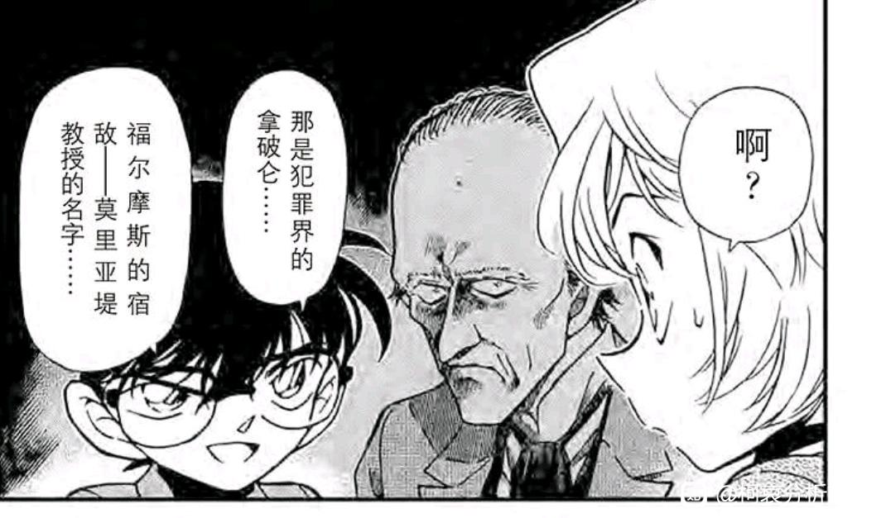
目录：
1、杯户中央医院的院长
2、琴酒的红黑战役
3、贝姐的红黑战役
4、朗姆的红黑战役
5、楠田陆道的选择
6、詹姆斯的平衡控制
7、柯南与秀一的警惕与反制
1、杯户中央医院的院长
2、琴酒的红黑战役
3、贝姐的红黑战役
4、朗姆的红黑战役
5、楠田陆道的选择
6、詹姆斯的平衡控制
7、柯南与秀一的警惕与反制
1、杯户中央医院的院长
我对院长的怀疑开始于下面这一幕：
如图，院长用了某种方式对水无的脚趾进行刺激，但水无毫无反应，第一次看到这一幕的人，大概会觉得“水无忍耐力很强”，但这很显然是有问题的。
【一种刺激方法之所以能被称为刺激方法，正是因为该方法对任何人都有效，然而院长的方法却失效了】
我不懂医学，不知道这个按压指甲是什么原理，但至少院长在这里，是有条件故意假装验证，实则继续隐瞒水无的苏醒情况的，同时院长还提出“可以将三日后的检查提前做”，詹姆斯和他打了双簧，强行拒绝了这一种验证方式，于是直到水无回到酒厂，除了秀一和卡迈尔之外所有FBI竟然都不知道水无是醒着的。
身为医院院长，竟然如此草率，于是院长进入了我的怀疑名单，而且比詹姆斯更可疑，毕竟詹姆斯可没有上手。
我对院长的怀疑开始于下面这一幕：
如图，院长用了某种方式对水无的脚趾进行刺激，但水无毫无反应，第一次看到这一幕的人，大概会觉得“水无忍耐力很强”，但这很显然是有问题的。
【一种刺激方法之所以能被称为刺激方法，正是因为该方法对任何人都有效，然而院长的方法却失效了】
我不懂医学，不知道这个按压指甲是什么原理，但至少院长在这里，是有条件故意假装验证，实则继续隐瞒水无的苏醒情况的，同时院长还提出“可以将三日后的检查提前做”，詹姆斯和他打了双簧，强行拒绝了这一种验证方式，于是直到水无回到酒厂，除了秀一和卡迈尔之外所有FBI竟然都不知道水无是醒着的。
身为医院院长，竟然如此草率，于是院长进入了我的怀疑名单，而且比詹姆斯更可疑，毕竟詹姆斯可没有上手。
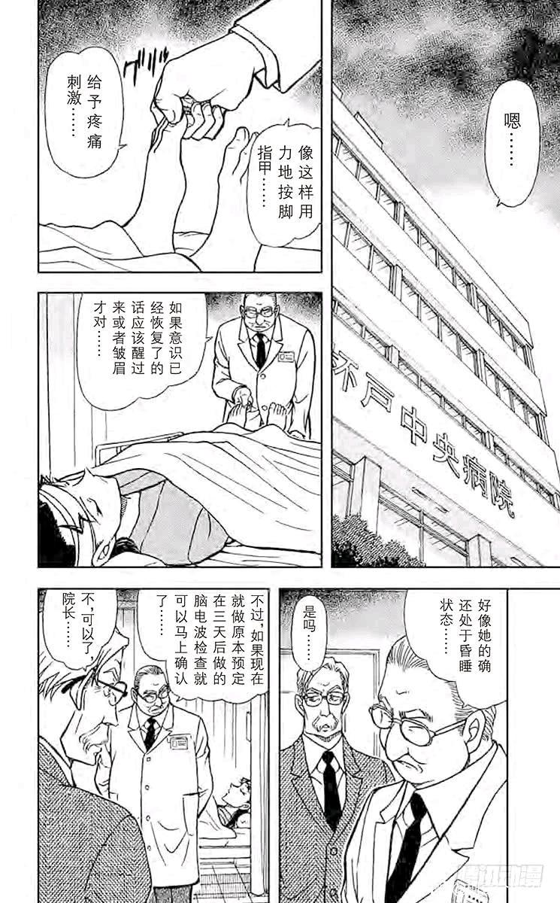
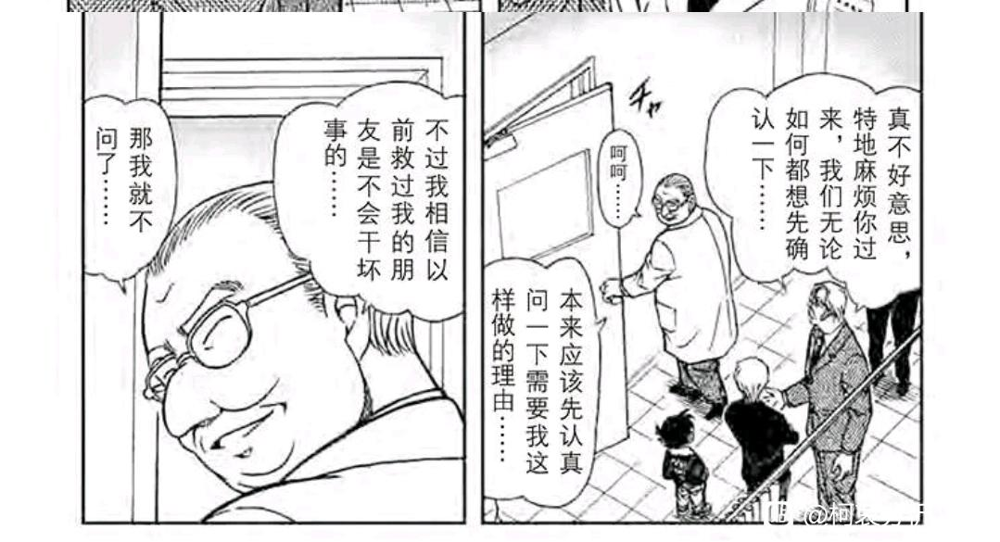
2024-05-19 18:45 | EdwardClow:这院长的鼻子真像乌丸莲耶2024-08-11 08:58 | 是昧羽啊🌝:不包括装睡的人，就只是个疼痛刺激而已
其实我一直不赞同把詹姆斯当成抢药的第三方。莫里亚蒂是需要党羽的，感觉还是想办法怎么圆詹黑更好。乌丸家继承人论（贝姐哥哥）+制药组龙头就很带感。
2024-05-19 11:33 | 🌐之徙:我还没发完，发完后再看看吧2024-05-19 11:39 | 贴吧用户_GR9GSJy:回复 🌐之徙 :好的，期待。不过这样的詹姆斯分析也需要回应上医院篇的七个孩子，詹姆斯认世良这一分镜的意义（虽然青山给出了牵强的解释），以及詹姆斯为什么会从一开始就知道药的存在（如果他知道，还有谁知道？）2024-05-19 21:57 | 🌐之徙:我发完了，显然詹姆斯有他自己的党羽，例如院长，院长虽然很可能为黑，但他现在是双面，帮酒厂也帮詹姆斯，说不定还真是忠于詹姆斯的。2024-05-19 21:57 | 🌐之徙:回复 贴吧用户_GR9GSJy :七个孩子就当是朗姆发的吧，或者谁给楠田手枪就谁发。2024-05-19 21:58 | 🌐之徙:回复 贴吧用户_GR9GSJy :世良的问题至少得知道世良去美国干嘛，目前没有信息确实没法分析。2024-05-19 21:59 | 🌐之徙:回复 贴吧用户_GR9GSJy :詹姆斯似乎是不知道A药变小的事情的，他只知道小哀被组织称为雪莉，却不知道小哀十八岁。2024-05-25 11:27 | 贴吧用户_09635NV:回复 🌐之徙 :回复 🌐之徙 :修正，世良去的是英国，而不是美国，这是柯南的推理2024-05-25 11:48 | 🌐之徙:回复 贴吧用户_09635NV :是青山说的，詹姆斯之所以认识世良，是因为以前在美国见过世良2024-05-25 12:00 | 贴吧用户_09635NV:回复 🌐之徙 :请回看柯南第971话漫画，看看柯南是怎么推理世良的。按照73访谈哀的原型还不是艾琳呢2024-05-25 12:24 | 🌐之徙:回复 🌐之徙 :漫画这个我不否认啊，世良本身就是英国人，柯南也知道她是英国人，现在讨论的是詹姆斯的问题。2024-05-25 12:26 | 🌐之徙:回复 贴吧用户_09635NV :73访谈里哀的名字就是来源于艾琳啊。


那么让我们看看这个院长的来历吧：
我们先假定詹姆斯说了实话，“很久以前在洛杉矶救了他”，回忆中詹姆斯为黑发，这里我们引入朱蒂的回忆，当时朱蒂准备加入FBI时也有詹姆斯的黑发形象，我们可以认为这两件事发生在同一时期，朱蒂全家被杀发生在20年前（此时朱蒂的父亲应该也在调查酒厂），也就是说，詹姆斯在如此紧要的关头，选择的医院院长是一个二十年没见过面的人，连对方是院长都是刚刚知道的。
二十年是很长的跨度，足够酒厂执行无数的拉拢计划，例如十七年前朗姆就试图拉拢阿曼达，只是失败了，酒厂拉拢到这位院长是完全有可能的。
而詹姆斯说的也未必都是实话，要知道满月时朱蒂受伤，并没有去杯户中央医院，而是在米花综合医院治疗，如果詹姆斯早已知道有如此靠谱的院长，为何不让朱蒂也在杯户中央医院呢？恐怕杯户中央医院对于詹姆斯有【除了医疗以为别的价值】，而这一价值恐怕就和身份不明的院长有关了。
我们先假定詹姆斯说了实话，“很久以前在洛杉矶救了他”，回忆中詹姆斯为黑发，这里我们引入朱蒂的回忆，当时朱蒂准备加入FBI时也有詹姆斯的黑发形象，我们可以认为这两件事发生在同一时期，朱蒂全家被杀发生在20年前（此时朱蒂的父亲应该也在调查酒厂），也就是说，詹姆斯在如此紧要的关头，选择的医院院长是一个二十年没见过面的人，连对方是院长都是刚刚知道的。
二十年是很长的跨度，足够酒厂执行无数的拉拢计划，例如十七年前朗姆就试图拉拢阿曼达，只是失败了，酒厂拉拢到这位院长是完全有可能的。
而詹姆斯说的也未必都是实话，要知道满月时朱蒂受伤，并没有去杯户中央医院，而是在米花综合医院治疗，如果詹姆斯早已知道有如此靠谱的院长，为何不让朱蒂也在杯户中央医院呢？恐怕杯户中央医院对于詹姆斯有【除了医疗以为别的价值】，而这一价值恐怕就和身份不明的院长有关了。
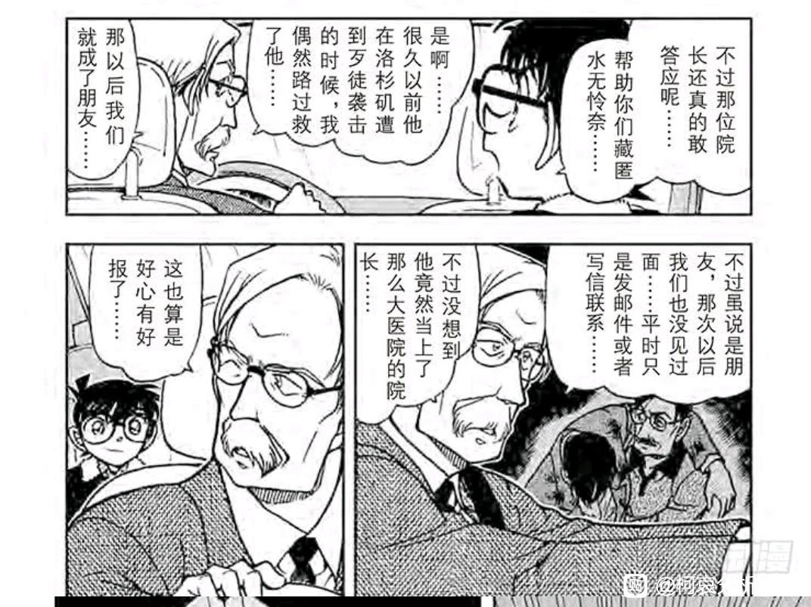
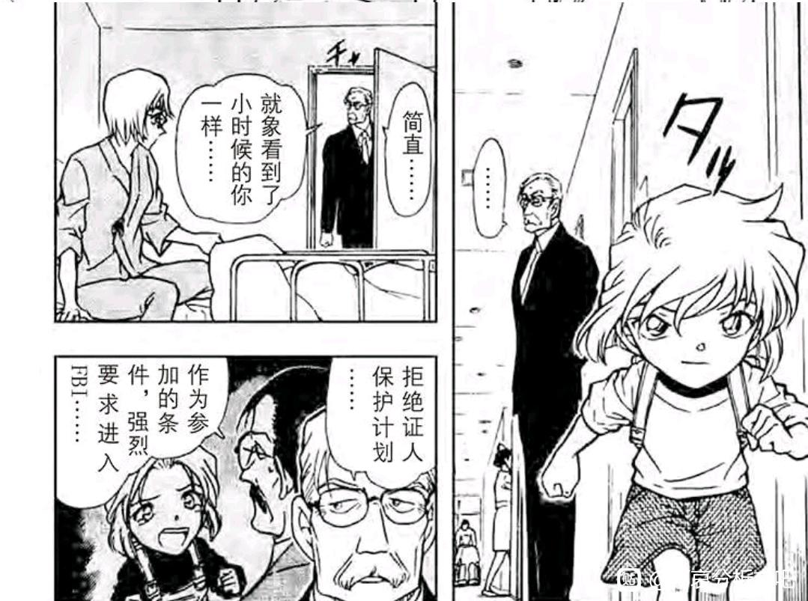
以上，我们确定了三个事实：
1、院长的身份不明，而且完全可能当黑方。
2、詹姆斯对院长很信任，会和他打配合，而且这种信任是不到万不得已不使用的，朱蒂找医院都不让去杯户中央医院。詹姆斯多次强调要“保护院长”而非“保护医院”。
3、出于某种目的，院长和詹姆斯有意让众FBI认为水无没有醒。
以上只是可疑，并非真正的证据，要想进一步确定院长的身份，我们需要进入酒厂的视角，尤其是琴酒的视角。
1、院长的身份不明，而且完全可能当黑方。
2、詹姆斯对院长很信任，会和他打配合，而且这种信任是不到万不得已不使用的，朱蒂找医院都不让去杯户中央医院。詹姆斯多次强调要“保护院长”而非“保护医院”。
3、出于某种目的，院长和詹姆斯有意让众FBI认为水无没有醒。
以上只是可疑，并非真正的证据，要想进一步确定院长的身份，我们需要进入酒厂的视角，尤其是琴酒的视角。
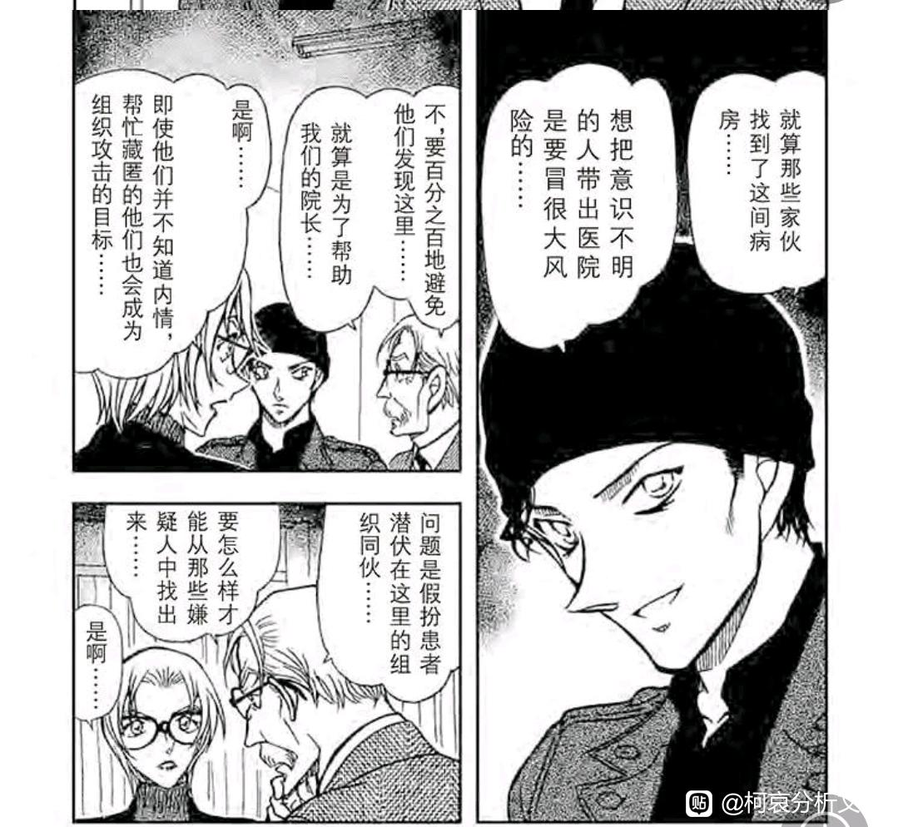
2024-05-19 12:07 | 贴吧用户_GR9GSJy:另外，虽然我也觉得这个院长可疑。但这里对院长的刻画似乎是为了后续“把医院和fbi切割”的剧情做铺垫。青山真的很喜欢画这种红方和身边人切割，防止组织影响到身边人的剧情。2024-05-19 22:04 | 🌐之徙:回复 贴吧用户_GR9GSJy :并不，青山也喜欢另一种方式，即【让组织以为小五郎是FBI的诱饵，从而放弃调查小五郎】，两种方法都存在。
2、琴酒的红黑战役
关于琴酒的部分，首先我们要追溯到冲击篇末尾，琴酒一句奇怪的话。
【线索到处都有】
这句话显得非常奇怪，琴酒此时面对的局面，根本就不是什么“到处都有线索”，相反，琴酒小队里没有一个人知道水无去哪了，像科恩觉得水无死了，基安蒂觉得水无一定叛变，琴酒如果考虑水无的动向，必然要思考水无被活捉的可能，甚至连车祸受伤的线索都是找不到的。
之后琴酒也根本不着急，贝姐倒是去找线索了，琴酒却还是悠哉悠哉带伏特加逛街。琴酒的自信从何而来？当然是他【已经有线索了】，而这个线索有且只有一种可能，那就是琴酒已经知道水无在杯户中央医院。
【在水无进入医院的那一刻，琴酒就已经知道水无在的医院了】
肯定有人会说，不对啊，那楠田陆道是干嘛的？琴酒费了半天调查了个寂寞？
这里就是考验联想能力的时候了，我们继续往下看。
关于琴酒的部分，首先我们要追溯到冲击篇末尾，琴酒一句奇怪的话。
【线索到处都有】
这句话显得非常奇怪，琴酒此时面对的局面，根本就不是什么“到处都有线索”，相反，琴酒小队里没有一个人知道水无去哪了，像科恩觉得水无死了，基安蒂觉得水无一定叛变，琴酒如果考虑水无的动向，必然要思考水无被活捉的可能，甚至连车祸受伤的线索都是找不到的。
之后琴酒也根本不着急，贝姐倒是去找线索了，琴酒却还是悠哉悠哉带伏特加逛街。琴酒的自信从何而来？当然是他【已经有线索了】，而这个线索有且只有一种可能，那就是琴酒已经知道水无在杯户中央医院。
【在水无进入医院的那一刻，琴酒就已经知道水无在的医院了】
肯定有人会说，不对啊，那楠田陆道是干嘛的？琴酒费了半天调查了个寂寞？
这里就是考验联想能力的时候了，我们继续往下看。
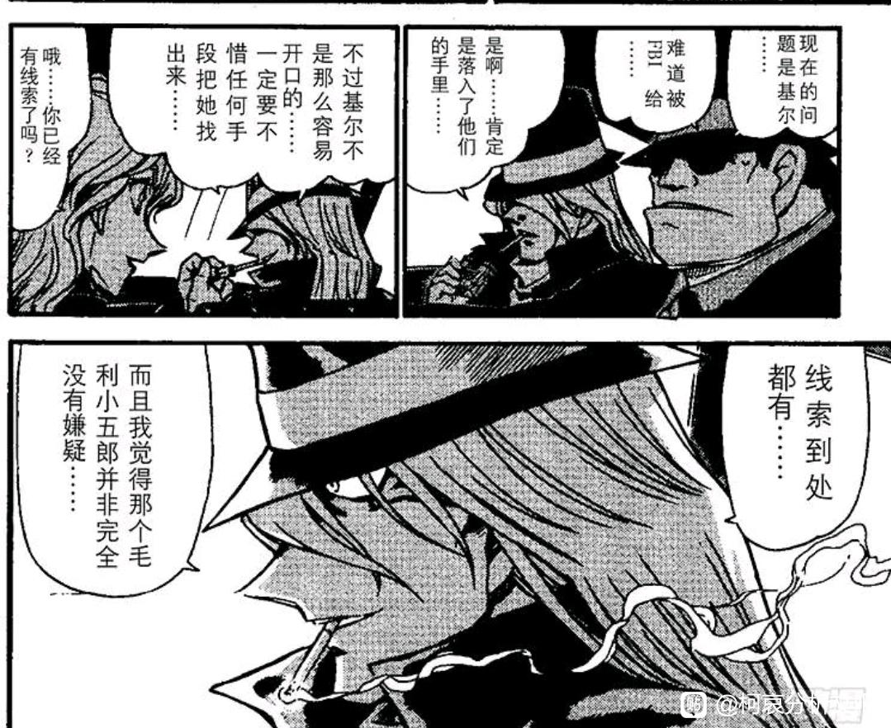
詹姆斯初登场时灰原微弱的雷达反应怎么解释
2024-05-19 22:00 | 🌐之徙:正片里已经有啦。其实这个微弱雷达说明不了什么，也可以认为小哀就是单纯觉得詹姆斯像个特工。2024-06-02 19:04 | 片场生还者😁:回复 🌐之徙 :回复 🌐之徙 :目前来讲，小哀的雷达貌似没有过失误。就比如公交车炸弹那集，新出医生是贝姐假扮的小哀都感应到了2024-06-02 22:20 | 🌐之徙:回复 片场生还者😁 :雷达是杀意感知，不是酒厂感知2024-06-02 22:54 | 片场生还者😁:没杀意的贝姐感知不出来的。
回复 🌐之徙 :这样的吗2024-06-03 00:06 | 贴吧用户_74P11b5:回复 🌐之徙 :那猫哥也没有杀意啊，而且我觉得当时写灰原雷达反应就是在暗示跟组织有联系，当时詹姆斯也没有杀意啊2024-06-03 01:03 | 🌐之徙:回复 贴吧用户_74P11b5 :猫哥是有对各类路人犯人的防御姿态的，正常情况下猫哥并无酒气2024-06-03 01:03 | 🌐之徙:回复 贴吧用户_74P11b5 :所以我认为詹姆斯所谓微弱雷达不算什么，就是詹姆斯本人有特工气质而已。

琴酒第二次出场，在瑛佑案件【迷之高额报酬】，此时琴酒仍然一副谜语人作风，手下都说“尽全力还是没找到”，而琴酒已经胸有成竹，从后文我们知道，此时贝姐已经找到目击车祸的小孩，将信息分享给琴酒，但如此重大利好消息，琴酒却还是没有分享给小伙伴们。
而且值得注意的是，琴酒说的是【已经瞄准了】，如果只有贝姐的信息，最多能确定水无在医院，却不知道是哪家医院，只能像瑛佑那样一家一家找，但琴酒显然是瞄准了唯一一家正确的医院，派了所谓“眼线”，这再次验证了琴酒早已知道杯户中央医院的信息。
而且值得注意的是，琴酒说的是【已经瞄准了】，如果只有贝姐的信息，最多能确定水无在医院，却不知道是哪家医院，只能像瑛佑那样一家一家找，但琴酒显然是瞄准了唯一一家正确的医院，派了所谓“眼线”，这再次验证了琴酒早已知道杯户中央医院的信息。
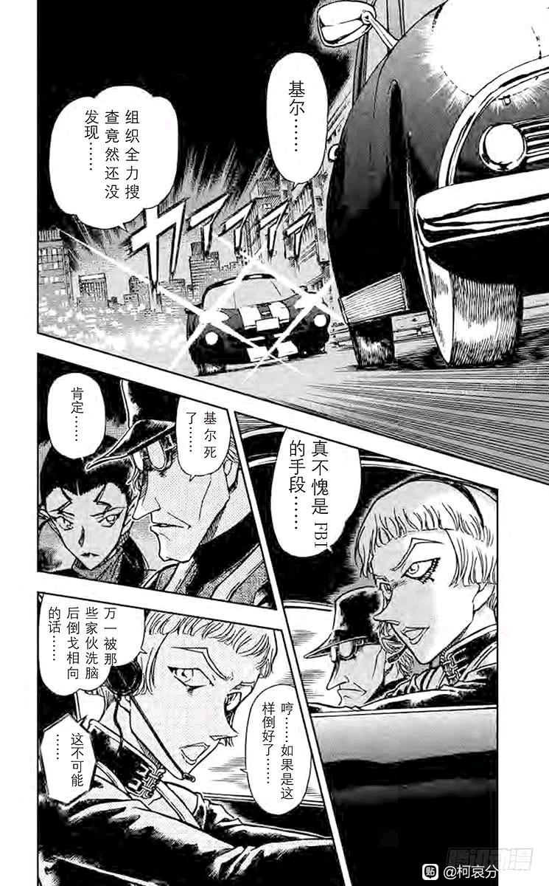
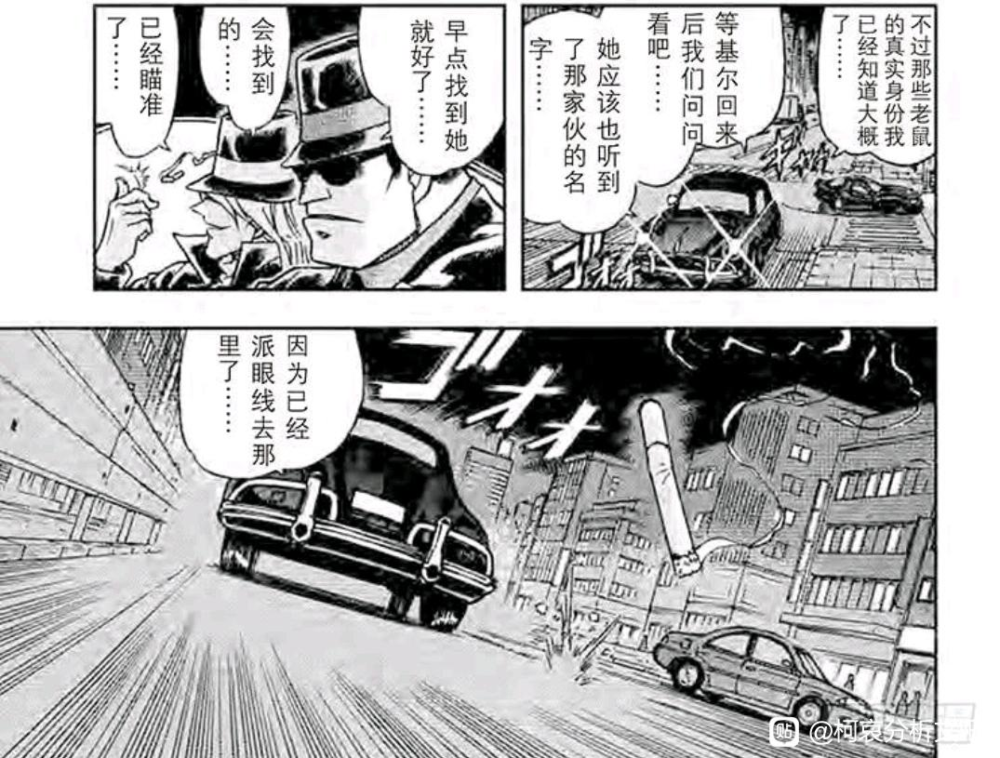
2024-05-19 12:00 | 贴吧用户_GR9GSJy:但后续按伏特加的叙述，似乎是出动了多个卧底在多家医院。考虑到琴酒是这场行动的最高指挥官，应该另外的人也是他派的吧。2024-05-19 12:15 | 贴吧用户_GR9GSJy:以及，那个章节琴酒的谜语人作风似乎是呼应卡迈尔身份的烟雾弹，给人一种卡迈尔是黑的错觉哈蛤2024-05-19 22:02 | 🌐之徙:回复 布林登黑火 :另外的人虽然出动在多家医院，但琴酒显然对别的地方不太重视，他自己的发言就是【已经瞄准了】，其他地方的人应该是烟雾弹。毕竟院长直属于琴酒，琴酒应该不会让他轻易被黑方知晓2024-05-19 22:03 | 🌐之徙:回复 贴吧用户_GR9GSJy :确实是卡迈尔烟雾弹，但那也要对应到一个真正的卧底上去。不是卡迈尔，那是谁？无非楠田或院长。2024-05-23 04:14 | 上総守信長ºº:回复 🌐之徙 :原文「もう目星をつけて、探りを入れているところだからな」 我觉得应该是“已经有了确定的方向，在派人刺探了”这样的意思，也完全对得上从贝姐嘴里得到水无住院的消息，但还不知道在哪一家，所以派人盯梢各个医院的操作2024-05-23 05:33 | 🌐之徙:回复 上総守信長ºº :这倒是两边都说的通，不过我总感觉琴酒太自信了，如果真的不知道具体在哪个医院，是很难如此自信（尤其是FBI完全可能把水无转到美国）2024-05-23 05:40 | 上総守信長ºº:回复 🌐之徙 :可以理解为青山给琴的人设就是这样，毕竟FBI居然把水无就这么留着日本的医院观察确实很费解。这种bug只能说为剧情服务罢2024-05-23 09:06 | 🌐之徙:回复 上総守信長ºº :但是琴酒吃瘪其实不少，例如再会篇雪莉跑了，琴酒就各种抱怨，只说大概在米花2024-05-23 09:06 | 🌐之徙:回复 上総守信長ºº :要我说，朱蒂的办法肯定比较好，但是老詹不同意2024-05-23 11:02 | 上総守信長ºº:回复 🌐之徙 :问题就还是在于，蠢和坏有时候不是那么容易判断的，老詹也可能就是单纯不够脑子而已2024-05-23 11:07 | 🌐之徙:回复 上総守信長ºº :老詹不可能蠢，他初登场智商就很高，后面知道秀一假死水平也很高，海猿岛老詹一直在胡言乱语，但仔细一看又有章法可循2024-05-23 21:18 | 上総守信長ºº:回复 🌐之徙 :见仁见智罢。毕竟老詹登场就是烟雾弹，而且因为烟的太成功73一直也没给这个人石锤发卡，说不定真的是保留了反转的可能
接下来就进入红黑正片了，我们首先要解答这个问题：
【如果琴酒早已知道医院，为何不早点劫走水无？】
这里就涉及到琴酒的具体计划了，早点劫走水无会发生什么？【水无昏迷中，受FBI保护，强行劫走相当困难】
即使是在正片中，我们也能发现，在琴酒的计划中，即使找到水无病房也没有实际作用，关键不在于确认水无的位置，而在于【让FBI知道水无位置暴露】。
这里是很微妙的，琴酒的计划说白了就是制造恐慌，让FBI转移，转移时再劫走，如果水无此时恰好苏醒则情况更加有利，毕竟琴酒是认为水无不会叛变的。
那么琴酒求解的问题就变为“让FBI恐慌”，据此琴酒想出了爆炸火灾投毒三件套，用这一手段让FBI意识到炸弹发信器，从而转移水无。
在让FBI恐慌之前，不防先让水无好好养伤……要是打草惊蛇，FBI直接带水无润美国了琴酒才是真抓瞎。
【如果琴酒早已知道医院，为何不早点劫走水无？】
这里就涉及到琴酒的具体计划了，早点劫走水无会发生什么？【水无昏迷中，受FBI保护，强行劫走相当困难】
即使是在正片中，我们也能发现，在琴酒的计划中，即使找到水无病房也没有实际作用，关键不在于确认水无的位置，而在于【让FBI知道水无位置暴露】。
这里是很微妙的，琴酒的计划说白了就是制造恐慌，让FBI转移，转移时再劫走，如果水无此时恰好苏醒则情况更加有利，毕竟琴酒是认为水无不会叛变的。
那么琴酒求解的问题就变为“让FBI恐慌”，据此琴酒想出了爆炸火灾投毒三件套，用这一手段让FBI意识到炸弹发信器，从而转移水无。
在让FBI恐慌之前，不防先让水无好好养伤……要是打草惊蛇，FBI直接带水无润美国了琴酒才是真抓瞎。
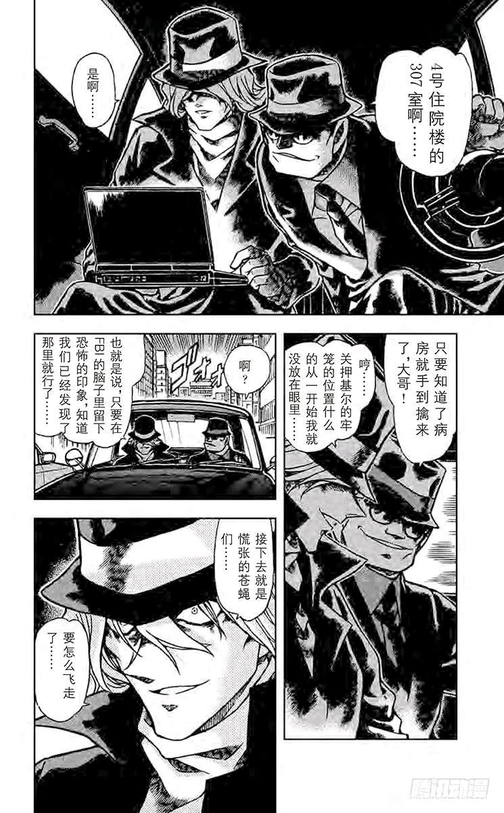
请注意，楠田暴露后，琴酒的投毒行动仅有一个晚上的准备时间，第二天就要开战。
仅凭一个晚上，做水无的虚假视频应该是可以的，放火也比较简单，但食物中毒就很困难了，这个绝不是说想要所有人一起中毒就可行的，一个晚上时间甚至都不能确定该餐厅的流量高峰。
然而，如果琴酒早已知道杯户中央医院，则一切都解释的通，为了筹备本次作战，琴酒完全有可能在周边吃一圈，知道哪家店流量大又好下毒，当晚才能有缜密的行动。
仅凭一个晚上，做水无的虚假视频应该是可以的，放火也比较简单，但食物中毒就很困难了，这个绝不是说想要所有人一起中毒就可行的，一个晚上时间甚至都不能确定该餐厅的流量高峰。
然而，如果琴酒早已知道杯户中央医院，则一切都解释的通，为了筹备本次作战，琴酒完全有可能在周边吃一圈，知道哪家店流量大又好下毒，当晚才能有缜密的行动。
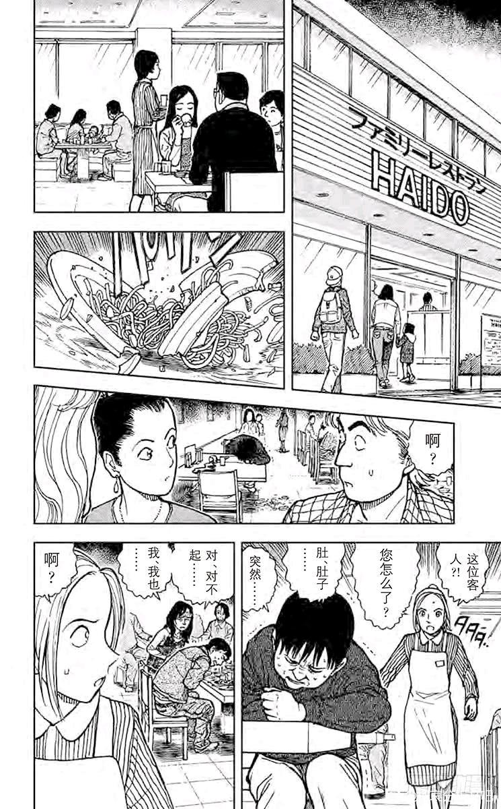
2024-08-14 16:46 | 想哭的悲伤321:“组织经费的奇怪去向”（雾）
最后一切的剧情也如琴酒所料，如果院长真的隐瞒了水无的苏醒情况，秀一等人无从下手，按詹姆斯那套三辆车的计划，很可能水无就会被劫走。
那么，琴酒的消息来源是谁？只可能是院长了，于是时间线如下：
①水无出车祸，詹姆斯拜托院长，水无于是住院。
②琴酒立刻从院长知道了水无在杯户中央医院，自信满满地和贝姐吹牛。此时琴酒不动手，一是水无昏迷不方便，二是现在动手会让院长暴露，不如等一等，等贝姐线索后假装是酒厂独立发现的杯户中央医院。
③贝姐找到了水无车祸的目击者，琴酒也不找线索，就顺坡下驴接受了贝姐信息，派楠田去医院。顺便在杯户周边多吃几顿饭，调查一下哪里好下毒。
④水无苏醒，院长假装水无没醒，并告诉琴酒。
⑤琴酒很可能当晚安排楠田“暴露”，次日大举进攻，成功夺取水无。
整套流程行云流水，琴酒的迷之自信完全得到了解释，同时由于院长根本不知道秀一假死之类的事情，之后也不必像传统詹黑论那样搞什么“害怕卧底暴露”。
水无回归后，琴酒更是直接放过了医院，也不进行任何报复，只是重点怀疑秀一有别的诡计，表面上是尊重水无的意见，实际上恐怕是掩护院长吧。
那么，琴酒的消息来源是谁？只可能是院长了，于是时间线如下：
①水无出车祸，詹姆斯拜托院长，水无于是住院。
②琴酒立刻从院长知道了水无在杯户中央医院，自信满满地和贝姐吹牛。此时琴酒不动手，一是水无昏迷不方便，二是现在动手会让院长暴露，不如等一等，等贝姐线索后假装是酒厂独立发现的杯户中央医院。
③贝姐找到了水无车祸的目击者，琴酒也不找线索，就顺坡下驴接受了贝姐信息，派楠田去医院。顺便在杯户周边多吃几顿饭，调查一下哪里好下毒。
④水无苏醒，院长假装水无没醒，并告诉琴酒。
⑤琴酒很可能当晚安排楠田“暴露”，次日大举进攻，成功夺取水无。
整套流程行云流水，琴酒的迷之自信完全得到了解释，同时由于院长根本不知道秀一假死之类的事情，之后也不必像传统詹黑论那样搞什么“害怕卧底暴露”。
水无回归后，琴酒更是直接放过了医院，也不进行任何报复，只是重点怀疑秀一有别的诡计，表面上是尊重水无的意见，实际上恐怕是掩护院长吧。
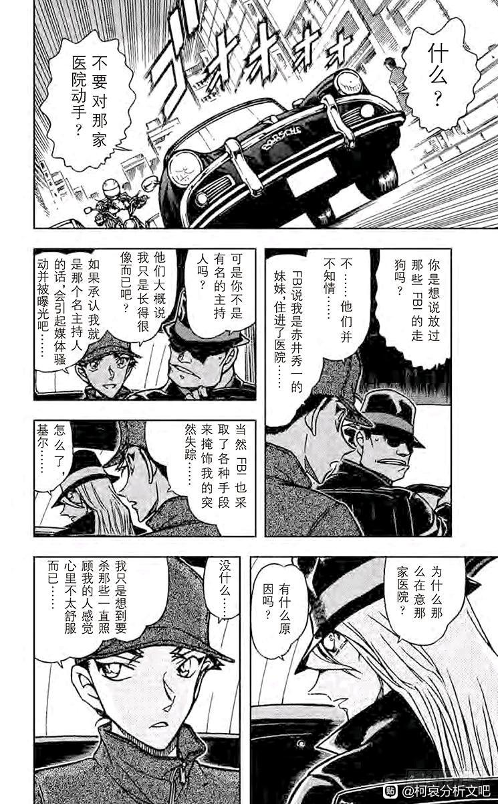
2024-05-19 12:38 | 贴吧用户_GR9GSJy:但如果是这样的话，其实琴酒完全可以安排楠田陆道暴露在水无的病房前，直接通过楠田陆道告诉fbi自己已经清楚了水无的位置。也就不需要后续的寄花操作了。而且琴酒究竟如何操控楠田陆道的暴露，这个可以详细讲讲吗？2024-05-19 22:05 | 🌐之徙:回复 贴吧用户_GR9GSJy :这个我正片解释了。楠田根本找不到水无病房，很快就会被路边FBI拦截，相当于白给，起不到恐吓作用。2024-05-19 22:06 | 🌐之徙:回复 贴吧用户_GR9GSJy :操控暴露很简单，告诉楠田当晚明显一点，掉个相机装一装，提早跑路，跑不了就自杀。2024-05-23 11:10 | snowfly1024:多吃几顿饭～琴酒大哥一下变得好萌
那么琴酒的部分就结束了，这里我们可以看出，琴酒拥有两个核心助手：
楠田陆道必须由琴酒派出，和琴酒定期联络。
院长必须实时告诉琴酒的信息。
而这两个条件是很容易达成的，例如楠田的住院就很奇怪，他根本一点伤都没有，怎么住进医院这么多天？
这里还有一个提示，第三个嫌疑人病已经好了却还想住院，于是一直不去照X光，那么楠田是完全没病的人，他可躲不过X光啊，只有一种可能，就是院长掩护了他，帮他顺利弄好了住院手续。
当然，院长的信息源比楠田要高的多，楠田一直以为自己是在“查找水无的下落”，但其实他只是一个让FB恐慌的工具人而已。
楠田陆道必须由琴酒派出，和琴酒定期联络。
院长必须实时告诉琴酒的信息。
而这两个条件是很容易达成的，例如楠田的住院就很奇怪，他根本一点伤都没有，怎么住进医院这么多天？
这里还有一个提示，第三个嫌疑人病已经好了却还想住院，于是一直不去照X光，那么楠田是完全没病的人，他可躲不过X光啊，只有一种可能，就是院长掩护了他，帮他顺利弄好了住院手续。
当然，院长的信息源比楠田要高的多，楠田一直以为自己是在“查找水无的下落”，但其实他只是一个让FB恐慌的工具人而已。
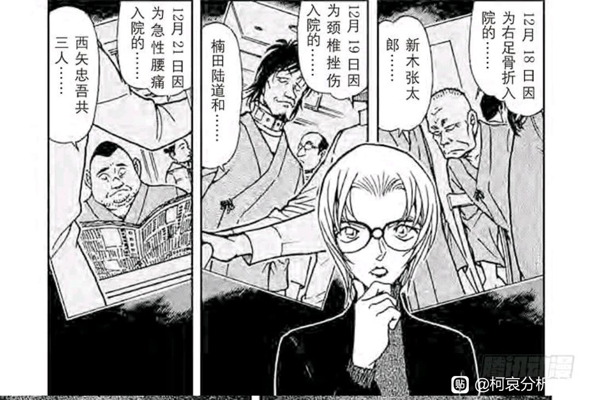
2024-05-19 12:42 | 贴吧用户_GR9GSJy:但如果是这样，院长和楠田都对琴酒汇报。那么七个孩子的铃声是哪里来的呢？2024-05-19 22:06 | 🌐之徙:回复 贴吧用户_GR9GSJy :就当是朗姆吧，总之是给楠田手枪的人。
3、贝姐的红黑战役
贝姐对琴酒的策略毫不知情。但她相比琴酒具有优势，即贝姐怀疑水无是老鼠，只是没必要揭发而已，有个正常人陪自己还挺好的。
同样回到【谜之高额报酬】，这里的剧情同样非常有趣：
小男孩目击到水无车祸，同时詹姆斯在场，目击到小男孩。
有意思的地方来了，这些水无的粉丝，有的信息被删除了，有的没有，被删除的信息都是些水无早期信息，包括一张水无在大阪的图片，但是更重要的信息，即【水无被车撞了】的信息，却一直挂在网上，柯南，瑛佑，贝姐都能随时查看。
言外之意，【一个拥有隐蔽水无早期历史的力量，却不隐蔽关键的水无车祸信息，几乎就是想让黑组看到。】
这个力量是什么呢？CIA或者FBI都有可能，毕竟隐瞒水无的历史只对美国人有好处，但是将水无的车祸信息泄露出去就是纯粹的内鬼行为，按理讲这种信息应该早点删掉才对，但是却一直挂着，最终被贝姐发现。
贝姐对琴酒的策略毫不知情。但她相比琴酒具有优势，即贝姐怀疑水无是老鼠，只是没必要揭发而已，有个正常人陪自己还挺好的。
同样回到【谜之高额报酬】，这里的剧情同样非常有趣：
小男孩目击到水无车祸，同时詹姆斯在场，目击到小男孩。
有意思的地方来了，这些水无的粉丝，有的信息被删除了，有的没有，被删除的信息都是些水无早期信息，包括一张水无在大阪的图片，但是更重要的信息，即【水无被车撞了】的信息，却一直挂在网上，柯南，瑛佑，贝姐都能随时查看。
言外之意，【一个拥有隐蔽水无早期历史的力量，却不隐蔽关键的水无车祸信息，几乎就是想让黑组看到。】
这个力量是什么呢？CIA或者FBI都有可能，毕竟隐瞒水无的历史只对美国人有好处，但是将水无的车祸信息泄露出去就是纯粹的内鬼行为，按理讲这种信息应该早点删掉才对，但是却一直挂着，最终被贝姐发现。
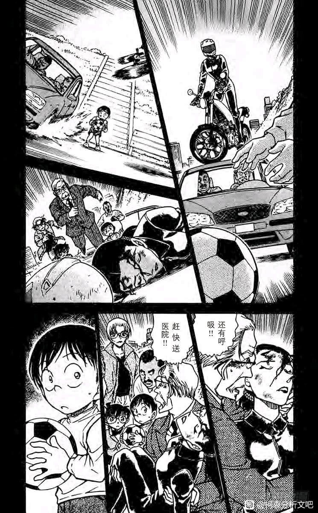
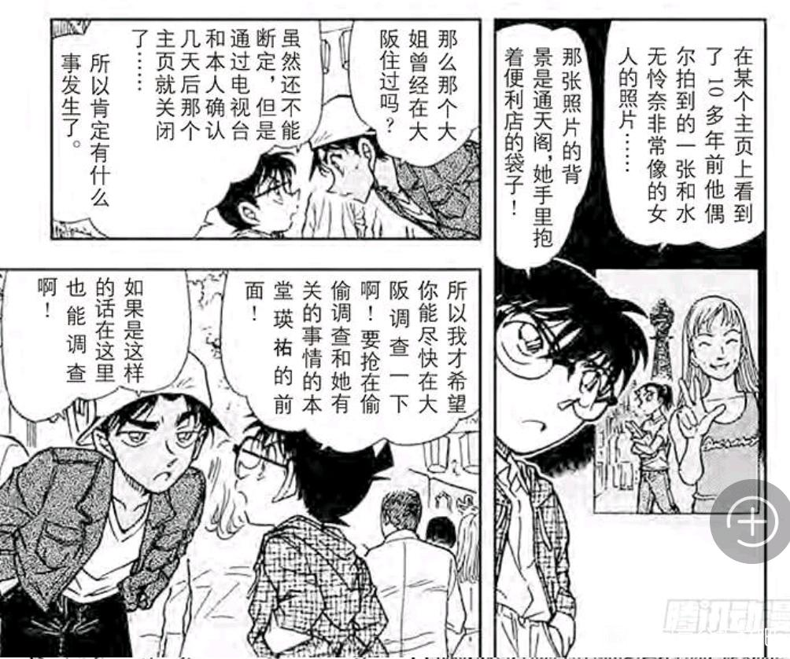
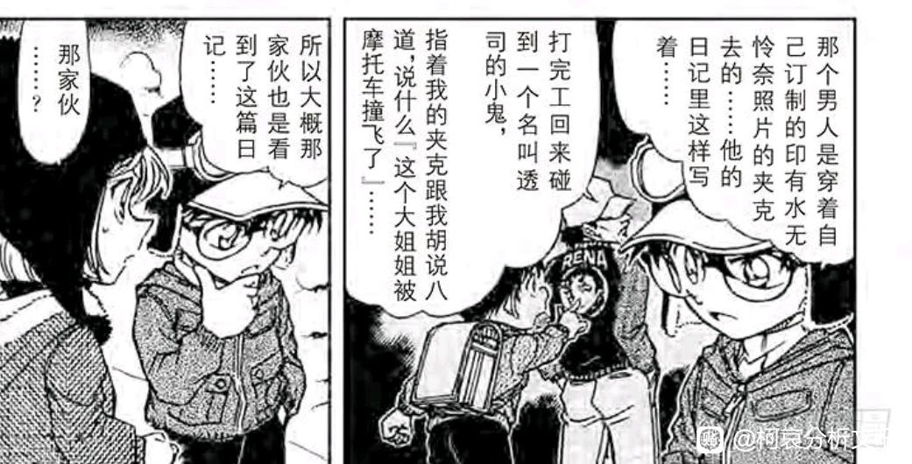
所以贝姐相当于白捡了一个情报，她后面还说什么“情报可是我获得的”，结果琴酒并不理她的邀功。
这个情报之所以泄露出去，似乎只能是詹姆斯做的，詹姆斯能够调度电视台的FBI势力去做公关，也能将他所知道的信息（即水无车祸时小孩在场）泄露给酒厂，这样一来，由柯南和秀一联手冲击篇导致的红方实质性进展才可能重归平衡。
之后贝姐就专注于对付秀一，这里我们注意酒厂的态度，面对已经暴露的FBI，如秀一，朱蒂，卡迈尔，都是杀意满满，而且会布置各种陷阱专杀FBI，例如满月专杀朱蒂，纽约专杀秀一，海猿岛勉强算专杀卡迈尔等等，哪怕机会不大，也要尝试一下（本案贝姐试图杀秀一，秀一直接秀车技贝姐根本追不上）
唯独对詹姆斯，酒厂态度比较暧昧。
这个情报之所以泄露出去，似乎只能是詹姆斯做的，詹姆斯能够调度电视台的FBI势力去做公关，也能将他所知道的信息（即水无车祸时小孩在场）泄露给酒厂，这样一来，由柯南和秀一联手冲击篇导致的红方实质性进展才可能重归平衡。
之后贝姐就专注于对付秀一，这里我们注意酒厂的态度，面对已经暴露的FBI，如秀一，朱蒂，卡迈尔，都是杀意满满，而且会布置各种陷阱专杀FBI，例如满月专杀朱蒂，纽约专杀秀一，海猿岛勉强算专杀卡迈尔等等，哪怕机会不大，也要尝试一下（本案贝姐试图杀秀一，秀一直接秀车技贝姐根本追不上）
唯独对詹姆斯，酒厂态度比较暧昧。
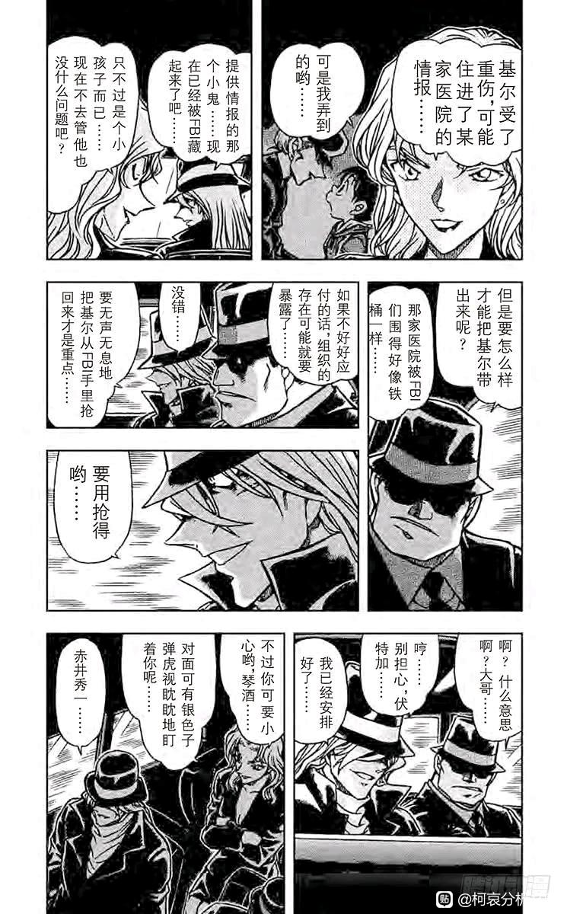
酒厂在明知詹姆斯就在楼里的情况下，寄了一个炸弹却不引爆，显得尤其可疑。
我们知道，詹姆斯对周边的防备是较低的，之前几个假警察都能绑架詹姆斯，他也并不能进行什么反抗，这些炸弹都有发信器，完全可以追踪詹姆斯的位置，直接炸了FBI头领岂不美哉？
为什么只寄给詹姆斯花？那就要看寄送情况了，大部分寄送对象都是楠田拍照拍出来的，而我们设想院长为黑，那院长就只认识詹姆斯，而且不但认识，还知道詹姆斯这种人留着是【无害的】，这些情报一给酒厂，酒厂当然对詹姆斯毫无杀意，这种对手，留着他当然更好了。
贝姐虽然不知道院长的情况，但她对詹姆斯应该有所了解，可能所有酒厂成员都对詹姆斯有所了解，知道这家伙属于养寇自重的典型代表，说不定传到雪莉耳里，詹姆斯俨然另一个真酒，于是产生了轻微的雷达。
当然，詹姆斯的养寇自重的信息，应该是由院长向黑方传递的，他本人并不能多好地联系黑方，只能通过院长进行一些平衡和干预。
我们知道，詹姆斯对周边的防备是较低的，之前几个假警察都能绑架詹姆斯，他也并不能进行什么反抗，这些炸弹都有发信器，完全可以追踪詹姆斯的位置，直接炸了FBI头领岂不美哉？
为什么只寄给詹姆斯花？那就要看寄送情况了，大部分寄送对象都是楠田拍照拍出来的，而我们设想院长为黑，那院长就只认识詹姆斯，而且不但认识，还知道詹姆斯这种人留着是【无害的】，这些情报一给酒厂，酒厂当然对詹姆斯毫无杀意，这种对手，留着他当然更好了。
贝姐虽然不知道院长的情况，但她对詹姆斯应该有所了解，可能所有酒厂成员都对詹姆斯有所了解，知道这家伙属于养寇自重的典型代表，说不定传到雪莉耳里，詹姆斯俨然另一个真酒，于是产生了轻微的雷达。
当然，詹姆斯的养寇自重的信息，应该是由院长向黑方传递的，他本人并不能多好地联系黑方，只能通过院长进行一些平衡和干预。
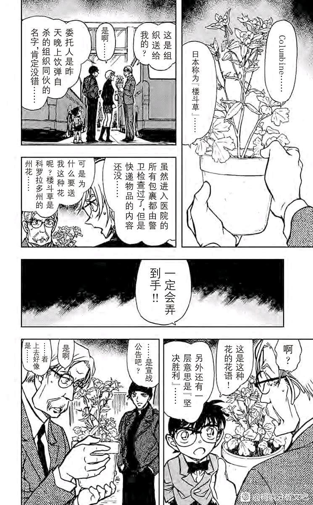
2024-05-23 04:18 | 上総守信長ºº:也可以理解为，如果直接引爆，那么收益不过是除掉一个铁混子詹姆斯，代价却是引来大量敬茶封锁现场，这对于把夺回水无作为行动核心目的的黑组来说真的是妙计吗
赶上大佬直播了
还有意外情况呢，就比如：“告诉你哦～我在和新一交往哦～”
4、朗姆的红黑战役
众所周知，酒厂分三派，以贝姐为主的一派和BOSS利益基本一致，旨在隐藏BOSS身份，消灭多余银弹，第二派以琴酒为主，纯干活，接受不了失败，锱铢必较，琴酒派系救水无的意愿最强烈。
而红黑篇隐藏的第三派正是朗姆派，这一派和贝姐的目的正好相反，反而希望BOSS暴露。
根据绯色篇的说法，楠田的手枪来源似乎是警察渠道，根据吧友关于海猿岛的分析，很可能是有警察背景的朗姆，我们假定朗姆确实用某种手段给了楠田手枪，并且发过邮件给BOSS，被瑛佑听到（这也是目前关于BOSS铃声的主流推理），那么朗姆的动机又是什么呢？
从楠田的动作上，当他看见秀一后，第一反应并不是自杀，而是开枪尝试反击，失败后才自杀。对秀一的恐惧应该早就已经灌输到楠田心中了，也就是说，琴酒和贝姐派楠田时，一开始就是当弃子用的，而朗姆给的枪正是给了楠田一个活下去的小勇气。
【朗姆希望楠田不要那么快放弃，要用枪闹大一些】
这似乎很符合朗姆的习惯，海猿岛朗姆也是开烧，直到BOSS忍无可忍训斥了朗姆，他才变成了常见的怂人。
众所周知，酒厂分三派，以贝姐为主的一派和BOSS利益基本一致，旨在隐藏BOSS身份，消灭多余银弹，第二派以琴酒为主，纯干活，接受不了失败，锱铢必较，琴酒派系救水无的意愿最强烈。
而红黑篇隐藏的第三派正是朗姆派，这一派和贝姐的目的正好相反，反而希望BOSS暴露。
根据绯色篇的说法，楠田的手枪来源似乎是警察渠道，根据吧友关于海猿岛的分析，很可能是有警察背景的朗姆，我们假定朗姆确实用某种手段给了楠田手枪，并且发过邮件给BOSS，被瑛佑听到（这也是目前关于BOSS铃声的主流推理），那么朗姆的动机又是什么呢？
从楠田的动作上，当他看见秀一后，第一反应并不是自杀，而是开枪尝试反击，失败后才自杀。对秀一的恐惧应该早就已经灌输到楠田心中了，也就是说，琴酒和贝姐派楠田时，一开始就是当弃子用的，而朗姆给的枪正是给了楠田一个活下去的小勇气。
【朗姆希望楠田不要那么快放弃，要用枪闹大一些】
这似乎很符合朗姆的习惯，海猿岛朗姆也是开烧，直到BOSS忍无可忍训斥了朗姆，他才变成了常见的怂人。
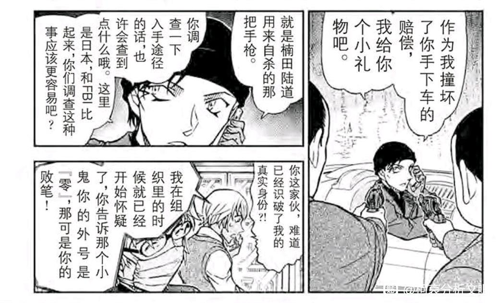
站在朗姆的立场，这局其实没他什么事，他大概可以通过其他一些方式（例如库拉索）知道发生了什么，但他没必要帮助琴酒。
琴酒这里有一句话值得玩味：有一个人是BOSS叫下来帮忙的，但“没指望他”，这里应该不是贝姐，贝姐确定秀一的位置，对于琴酒来说帮助是很大的，所以这里就只能是朗姆了，水无篇本身算是琴酒的一个失误，现在只是弥补错误而已，琴酒自然不希望朗姆把事情搞砸，他可不想像朗姆那样天天被人把失误挂在嘴边，因此琴酒拒绝了朗姆的参与，朗姆只好做一些小动作，例如给楠田手枪。
另外，波本对当时的楠田三选一十分清楚，波本的情报来源要么是院长要么是朗姆，我推测是朗姆，当时院长并未在秀一他们身边，只有朗姆能通过库拉索了解全部情况。波本也不知道院长可能是黑方的事情，不然应该会提醒秀一的。
琴酒这里有一句话值得玩味：有一个人是BOSS叫下来帮忙的，但“没指望他”，这里应该不是贝姐，贝姐确定秀一的位置，对于琴酒来说帮助是很大的，所以这里就只能是朗姆了，水无篇本身算是琴酒的一个失误，现在只是弥补错误而已，琴酒自然不希望朗姆把事情搞砸，他可不想像朗姆那样天天被人把失误挂在嘴边，因此琴酒拒绝了朗姆的参与，朗姆只好做一些小动作，例如给楠田手枪。
另外，波本对当时的楠田三选一十分清楚，波本的情报来源要么是院长要么是朗姆，我推测是朗姆，当时院长并未在秀一他们身边，只有朗姆能通过库拉索了解全部情况。波本也不知道院长可能是黑方的事情，不然应该会提醒秀一的。
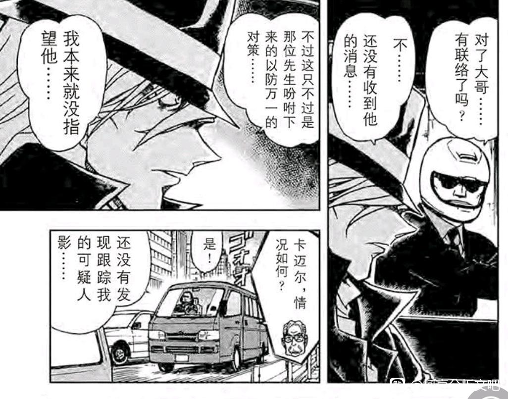
5、楠田陆道的选择
楠田的炸弹是假的，如果他立刻向FBI投降，完全可以保住一条命，楠田不这么做很可能是受到了威胁，例如家人性命在酒厂手上，酒厂给他灌输“遇到秀一赶紧自杀”之类的说法。
楠田靠自己是不可能摸到水无的房间的，即使院长知道位置，楠田也找不到，因为房间外还有大量FBI，楠田连靠近都很困难。
于是楠田的主要任务（琴酒交代的）主要是拍摄其他人的住院信息。其实稍微想想就知道这不可能，明知有FBI，水无怎么可能出现在这种看板上，琴酒就是骗楠田让他有个盼头而已。
这个角色有一说一完全可以有更丰富的细节，只是青山原著里太单薄了。
楠田的炸弹是假的，如果他立刻向FBI投降，完全可以保住一条命，楠田不这么做很可能是受到了威胁，例如家人性命在酒厂手上，酒厂给他灌输“遇到秀一赶紧自杀”之类的说法。
楠田靠自己是不可能摸到水无的房间的，即使院长知道位置，楠田也找不到，因为房间外还有大量FBI，楠田连靠近都很困难。
于是楠田的主要任务（琴酒交代的）主要是拍摄其他人的住院信息。其实稍微想想就知道这不可能，明知有FBI，水无怎么可能出现在这种看板上，琴酒就是骗楠田让他有个盼头而已。
这个角色有一说一完全可以有更丰富的细节，只是青山原著里太单薄了。
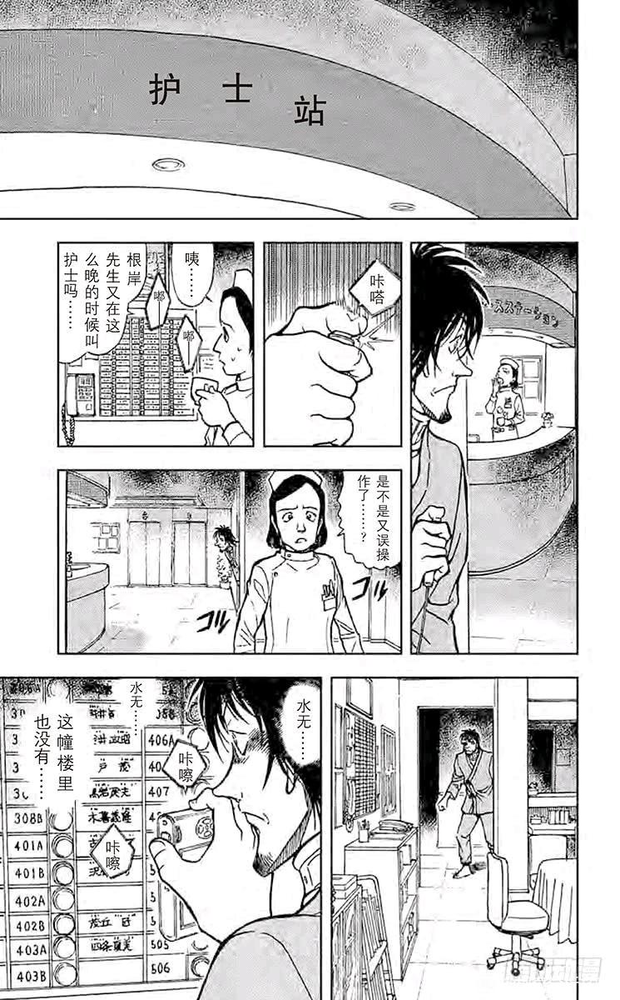
2024-05-22 03:04 | 520柯南8:楠田陆道连个酒厂代号都没有，说白了他跟宫野明美一样都是最底层人士。
我认为楠田这里是故意暴露的，当天水无已经苏醒，对于琴酒来说箭在弦上不得不发，楠田通过故意掉落摄像头的方法，成功暴露。
且楠田本来还会在病房留下一些证据，朱蒂也认为楠田会消灭证据从而回到房间，然而楠田有备而来，病床上什么证据都没找到，进水手机也带在身上，楠田更是没有丝毫犹豫就找到了逃跑路线（可能又是院长提供的）
随后楠田上车，这里应该是准备逃跑，当他发现手机进水后，按照琴酒的指示他就应该开车随便找个地方自杀了，但是朗姆的手枪给了他勇气，他已经完全看见秀一，却还是勇于对枪，直到终于发现了绝望的实力差距，只好自杀了。朗姆的小动作并没有多少作用，反而增加了自己暴露的风险。
对于楠田个人来讲，不论琴酒还是朗姆都没有把他当活人看，表面上楠田能在琴酒和朗姆的路线中二选一，但两条路线都走向死亡，最终他选择了一种尸体更完整的方案，死后被秀一折腾尸体不得安宁，只能说楠田还是应该学学沼渊，跑了不就完事了。
且楠田本来还会在病房留下一些证据，朱蒂也认为楠田会消灭证据从而回到房间，然而楠田有备而来，病床上什么证据都没找到，进水手机也带在身上，楠田更是没有丝毫犹豫就找到了逃跑路线（可能又是院长提供的）
随后楠田上车，这里应该是准备逃跑，当他发现手机进水后，按照琴酒的指示他就应该开车随便找个地方自杀了，但是朗姆的手枪给了他勇气，他已经完全看见秀一，却还是勇于对枪，直到终于发现了绝望的实力差距，只好自杀了。朗姆的小动作并没有多少作用，反而增加了自己暴露的风险。
对于楠田个人来讲，不论琴酒还是朗姆都没有把他当活人看，表面上楠田能在琴酒和朗姆的路线中二选一，但两条路线都走向死亡，最终他选择了一种尸体更完整的方案，死后被秀一折腾尸体不得安宁，只能说楠田还是应该学学沼渊，跑了不就完事了。
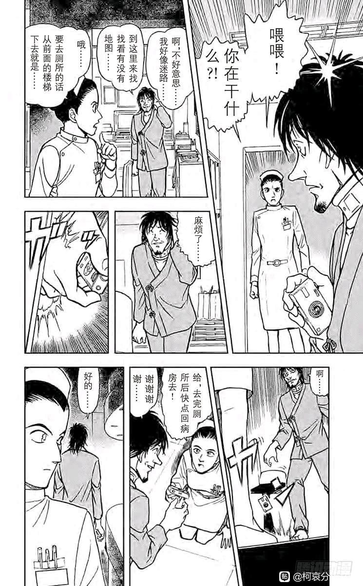
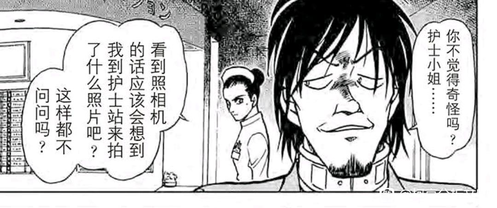
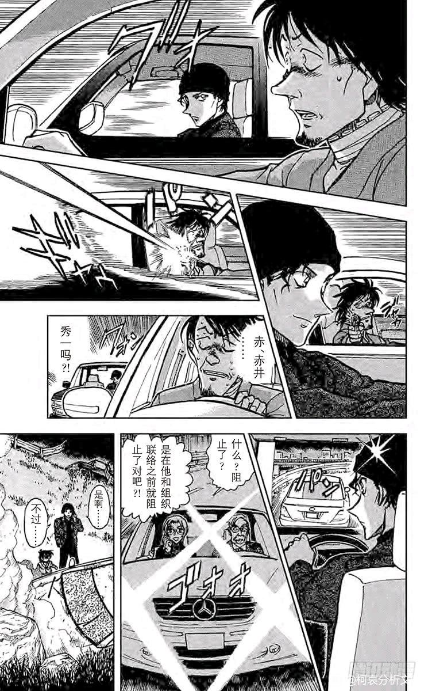
6、詹姆斯的平衡控制
前文我们已经提到了大量信息，许多线索指向院长为黑方，那么詹姆斯知不知道院长是黑方呢？
这个问题没有标准答案，我个人的观点是，詹姆斯知道院长是黑方，但他们没有挑明，而是用暗示的方式传递信息。
作为平衡老手，早在冲击篇面对大好局势，詹姆斯就胡说什么“不要一网打尽，要一个一个“钓出来”，最后急着对水无下手，只捉了一个人。
现在詹姆斯面对的局势是，他能压制秀一（用什么“FBI在日本不方便”之类的理由，但当柯南也加入进来时，詹姆斯的局面险些失控），于是他果断将水无安排在自己的“老友”，有黑组嫌疑的杯户中央医院，静待事情发生。
前文我们已经提到了大量信息，许多线索指向院长为黑方，那么詹姆斯知不知道院长是黑方呢？
这个问题没有标准答案，我个人的观点是，詹姆斯知道院长是黑方，但他们没有挑明，而是用暗示的方式传递信息。
作为平衡老手，早在冲击篇面对大好局势，詹姆斯就胡说什么“不要一网打尽，要一个一个“钓出来”，最后急着对水无下手，只捉了一个人。
现在詹姆斯面对的局势是，他能压制秀一（用什么“FBI在日本不方便”之类的理由，但当柯南也加入进来时，詹姆斯的局面险些失控），于是他果断将水无安排在自己的“老友”，有黑组嫌疑的杯户中央医院，静待事情发生。
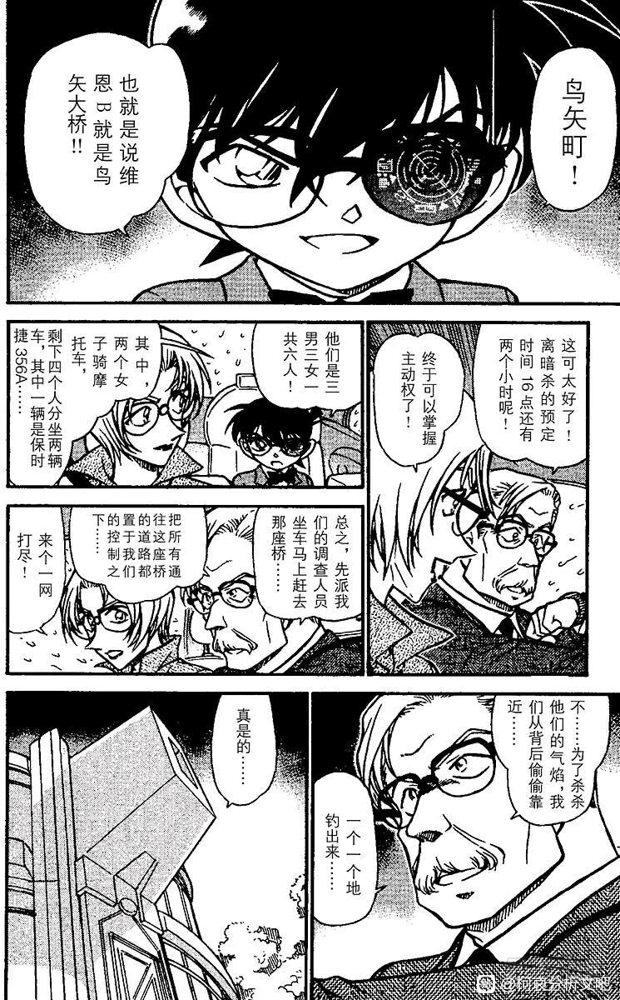
接下来一段时间，詹姆斯毫无动作，这里最保守也是最容易想到的方法，当然就是朱蒂多次建议的运到美国，但都被詹姆斯拒绝，一旦运回美国，失去了院长这个盟友，局势就不受控制了，所以詹姆斯几乎是强硬地否决了朱蒂的要求；同理，秀一打算拿水无当诱饵，詹姆斯同样不满意，要求秀一必须0风险，才能保护院长。
詹姆斯还配合院长隐瞒水无苏醒的消息，这同样是为了平衡考虑，水无正在昏迷，或者【在FBI眼中昏迷】，对于詹姆斯而言都有周转的余地，一旦明牌水无苏醒，则詹姆斯就不得不面对水无掌握的黑组情报，黑方将剧烈受挫。（连水无这种人都背叛了，琴酒估计要被宾加弹劾）
这种一边倒的局势下，詹姆斯至少有以下三点风险：
1、自己的安全得不到保证，没准哪天就被黑组炸死了。
2、酒厂倒台的各种事情还没有准备好，詹姆斯难以在事后获取酒厂的秘密。
3、詹姆斯本人的地位可能被秀一取代。
詹姆斯的行为或许有更多原因，这里就简单列举三点。
詹姆斯还配合院长隐瞒水无苏醒的消息，这同样是为了平衡考虑，水无正在昏迷，或者【在FBI眼中昏迷】，对于詹姆斯而言都有周转的余地，一旦明牌水无苏醒，则詹姆斯就不得不面对水无掌握的黑组情报，黑方将剧烈受挫。（连水无这种人都背叛了，琴酒估计要被宾加弹劾）
这种一边倒的局势下，詹姆斯至少有以下三点风险：
1、自己的安全得不到保证，没准哪天就被黑组炸死了。
2、酒厂倒台的各种事情还没有准备好，詹姆斯难以在事后获取酒厂的秘密。
3、詹姆斯本人的地位可能被秀一取代。
詹姆斯的行为或许有更多原因，这里就简单列举三点。
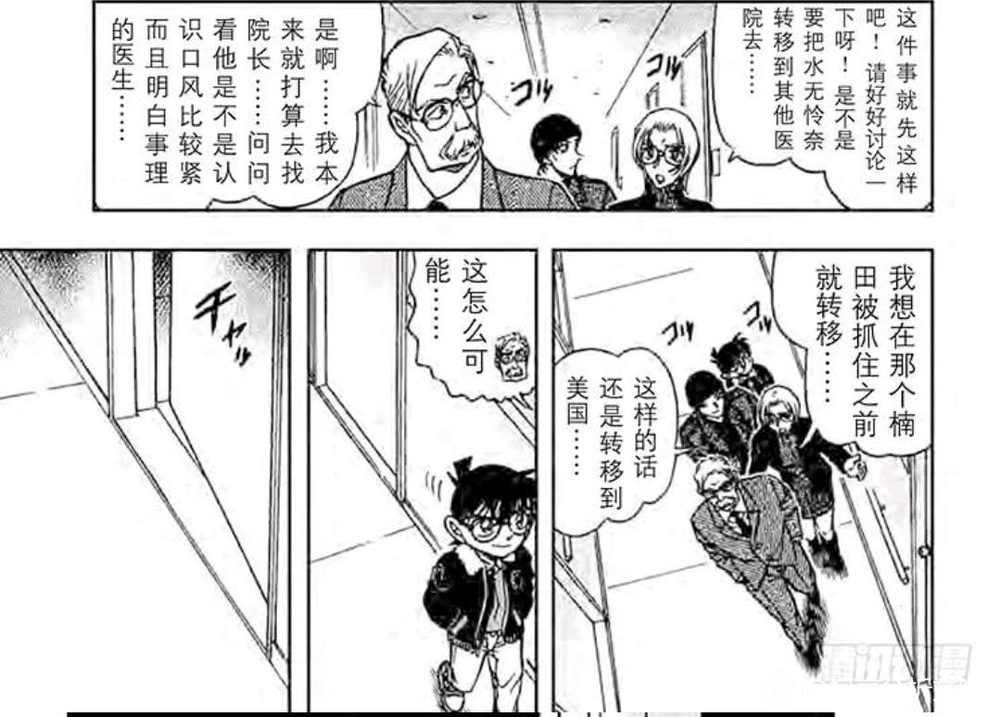
关于詹姆斯的疑点还有很多，传统詹黑论都有涉及，这里就不再多提。
詹姆斯的消极立场是有目共睹的，他没有背景介绍，没有深仇大恨，没有CP，在事件发生时总是犹犹豫豫，跟不上秀一的节奏，完全不像一个FBI首领。红黑篇如此，海猿岛还是如此，詹姆斯总能提出一些漏洞百出的计划，对正确的计划则提出各种苛责。
此外，詹姆斯还热衷于用语音暗示贬低自己的队友们，在朱蒂面前暗示秀一过于投入，说卡迈尔“看起来不怎么引起好感”，在秀一面前暗中说柯南手机泡水搞砸了计划（秀一帮柯南出头了），这些话一句比一句奇怪，就不展开说了。
但是，詹姆斯却有【识人之明】，能轻松对付一般的匪徒，能很快理解秀一的假死计划并陪着他演戏，这些迹象说明詹姆斯并不傻，那他那些消极行为就只能被理解为别有用心。
万幸的是，柯南和秀一并非毫无防备。
詹姆斯的消极立场是有目共睹的，他没有背景介绍，没有深仇大恨，没有CP，在事件发生时总是犹犹豫豫，跟不上秀一的节奏，完全不像一个FBI首领。红黑篇如此，海猿岛还是如此，詹姆斯总能提出一些漏洞百出的计划，对正确的计划则提出各种苛责。
此外，詹姆斯还热衷于用语音暗示贬低自己的队友们，在朱蒂面前暗示秀一过于投入，说卡迈尔“看起来不怎么引起好感”，在秀一面前暗中说柯南手机泡水搞砸了计划（秀一帮柯南出头了），这些话一句比一句奇怪，就不展开说了。
但是，詹姆斯却有【识人之明】，能轻松对付一般的匪徒，能很快理解秀一的假死计划并陪着他演戏，这些迹象说明詹姆斯并不傻，那他那些消极行为就只能被理解为别有用心。
万幸的是，柯南和秀一并非毫无防备。
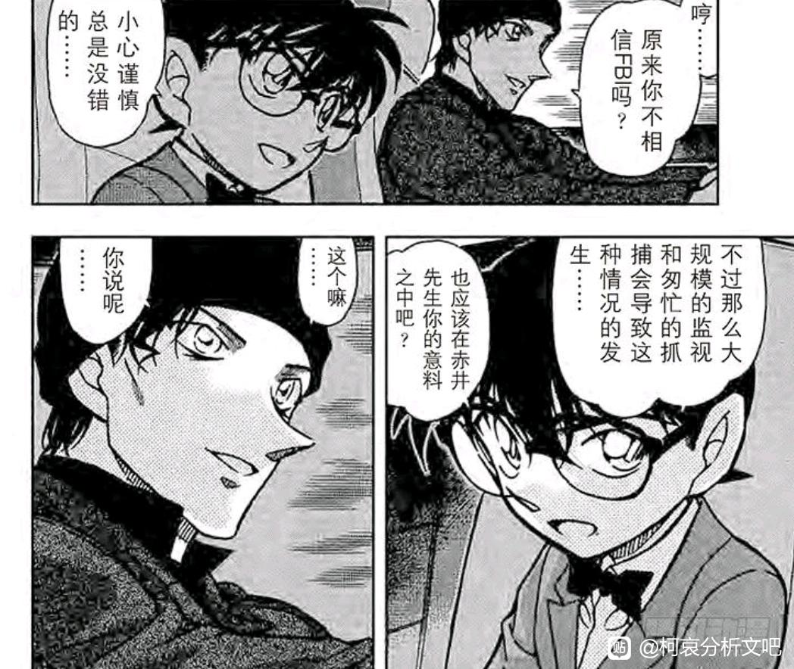
我想出了一个暴论：杯户院长是乌丸莲耶。詹姆斯不是黑衣组织成员，他只是boss的朋友。詹姆斯救了洛杉矶遇袭的院长是假，和院长发邮件联系是真。
2024-05-19 22:07 | 🌐之徙:我也这么想过，但院长更像是琴酒的手下，而非贝姐的亲密人物。贝姐根本不知道院长是黑方。2024-05-19 23:05 | 贴吧用户_GR9GSJy:但如果詹姆斯多年前就见过壮年的乌丸，岂不意味着乌丸早就返老还童了（按理说他应该140岁了）？2024-08-12 05:24 | 没字也行:回复 🌐之徙 : boss在组织不一定只有一个身份。
7、柯南与秀一的警惕与反制
秀一一直以来都不怎么和詹姆斯他们一起行动，满月时秀一就单独行动，即使在詹姆斯被绑架的时候，秀一也才在剪短发后和詹姆斯第一次见面。冲击篇秀一仍然不对詹姆斯报告具体位置，只在最后时刻跑出来秀狙击，到了红黑篇秀一更是什么都不告诉詹姆斯。
显然，秀一一直以来都希望【将水无作为诱饵吸引酒厂上钩】，然而詹姆斯根本不同意，尽管詹姆斯给了一些理由，什么FBI在日本不方便之类，秀一还是坚持提出一些激进的建议。
（这或许可以解释秀一后期和安室“狼狈为奸”，既然詹姆斯束手束脚，不如去找公安）
但詹姆斯明面上还是秀一的上级，而且詹姆斯通过自己的手段也知晓了秀一假死，秀一不得不和詹姆斯分享一些自己的秘密（这段争夺手机，秀一非常用力），这种情况很可能是不情愿的。
直到柯南与秀一见面后，秀一终于可以抛开詹姆斯单独进行策划，此前在满月篇，秀一就对柯南的能力有所了解了，再加上朱蒂是柯南吹+秀一自己残存的涟漪篇记忆+柯南正在保护小哀，秀一就完全倾向于和柯南合作，即使水无苏醒这种大事也不告诉詹姆斯众人。
秀一一直以来都不怎么和詹姆斯他们一起行动，满月时秀一就单独行动，即使在詹姆斯被绑架的时候，秀一也才在剪短发后和詹姆斯第一次见面。冲击篇秀一仍然不对詹姆斯报告具体位置，只在最后时刻跑出来秀狙击，到了红黑篇秀一更是什么都不告诉詹姆斯。
显然，秀一一直以来都希望【将水无作为诱饵吸引酒厂上钩】，然而詹姆斯根本不同意，尽管詹姆斯给了一些理由，什么FBI在日本不方便之类，秀一还是坚持提出一些激进的建议。
（这或许可以解释秀一后期和安室“狼狈为奸”，既然詹姆斯束手束脚，不如去找公安）
但詹姆斯明面上还是秀一的上级，而且詹姆斯通过自己的手段也知晓了秀一假死，秀一不得不和詹姆斯分享一些自己的秘密（这段争夺手机，秀一非常用力），这种情况很可能是不情愿的。
直到柯南与秀一见面后，秀一终于可以抛开詹姆斯单独进行策划，此前在满月篇，秀一就对柯南的能力有所了解了，再加上朱蒂是柯南吹+秀一自己残存的涟漪篇记忆+柯南正在保护小哀，秀一就完全倾向于和柯南合作，即使水无苏醒这种大事也不告诉詹姆斯众人。
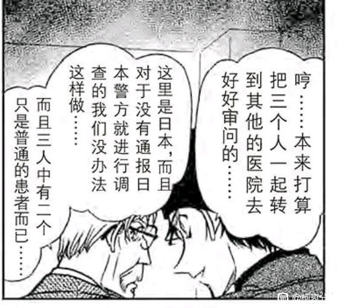
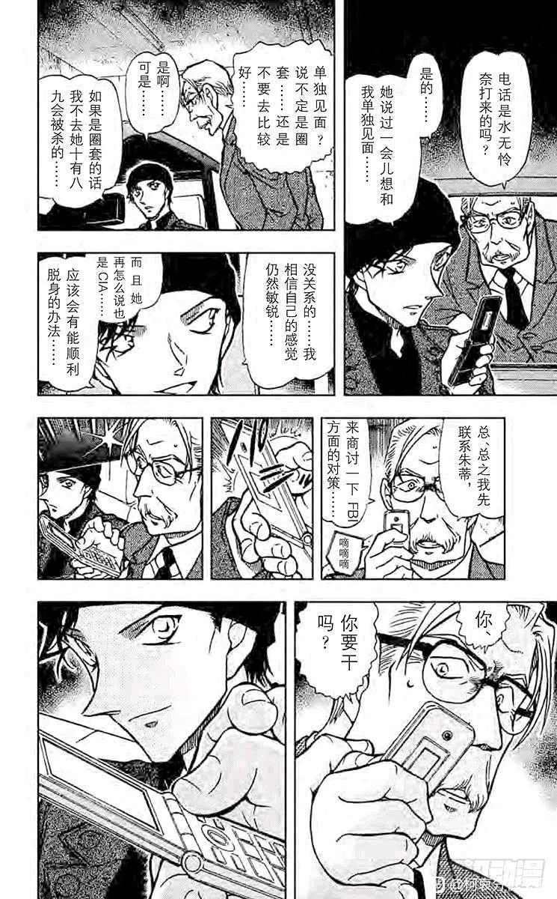
至于这个院长，柯南和我看到的疑点是一样的，那就是院长去刺激水无的脚趾甲这一幕。
显然，柯南和我一样，根本不相信这个院长的判断，但是柯南可没有琴酒那边的视角，他是如何做到上来就不相信院长的呢？
答：三个楠田嫌疑人的入院理由都是真的。
此时柯南还没有调查过三个嫌疑人，但是直觉上应该认为三个人里至少有一瓶酒，那这瓶酒早早混进医院，而且装病，必然有人帮助，院长由此进入柯南的嫌疑名单。
柯南杀一个回马枪之后发现水无醒着，对院长的怀疑程度更高了，尽管詹姆斯号称没有和院长说很多事情，但谁知道詹姆斯说的是不是真的，于是柯南决定连詹姆斯一起瞒。
秀一在此露出了赞许的目光，以秀一的立场，很难像柯南那样回马枪确定水无苏醒，总不能当场打詹姆斯的脸嘛，但柯南帮秀一做了他想做的事，秀一非常满意。
之后秀一就对柯南很信任了，从一开始的“小鬼真碍事”到“朱蒂对那个小孩真是执着啊”再到天天“boya”的叫，秀一很清楚自己和詹姆斯只是暂时的盟友，如今他终于找到了更靠谱的伙伴，秀一假死之后，一方面可以让水无在黑方身边变高，另一方面，自己也可以减少在FBI的活动，从而抛开詹姆斯做一些更有意义的事情（例如保护小哀啦，联络安室啦）
显然，柯南和我一样，根本不相信这个院长的判断，但是柯南可没有琴酒那边的视角，他是如何做到上来就不相信院长的呢？
答：三个楠田嫌疑人的入院理由都是真的。
此时柯南还没有调查过三个嫌疑人，但是直觉上应该认为三个人里至少有一瓶酒，那这瓶酒早早混进医院，而且装病，必然有人帮助，院长由此进入柯南的嫌疑名单。
柯南杀一个回马枪之后发现水无醒着，对院长的怀疑程度更高了，尽管詹姆斯号称没有和院长说很多事情，但谁知道詹姆斯说的是不是真的，于是柯南决定连詹姆斯一起瞒。
秀一在此露出了赞许的目光，以秀一的立场，很难像柯南那样回马枪确定水无苏醒，总不能当场打詹姆斯的脸嘛，但柯南帮秀一做了他想做的事，秀一非常满意。
之后秀一就对柯南很信任了，从一开始的“小鬼真碍事”到“朱蒂对那个小孩真是执着啊”再到天天“boya”的叫，秀一很清楚自己和詹姆斯只是暂时的盟友，如今他终于找到了更靠谱的伙伴，秀一假死之后，一方面可以让水无在黑方身边变高，另一方面，自己也可以减少在FBI的活动，从而抛开詹姆斯做一些更有意义的事情（例如保护小哀啦，联络安室啦）
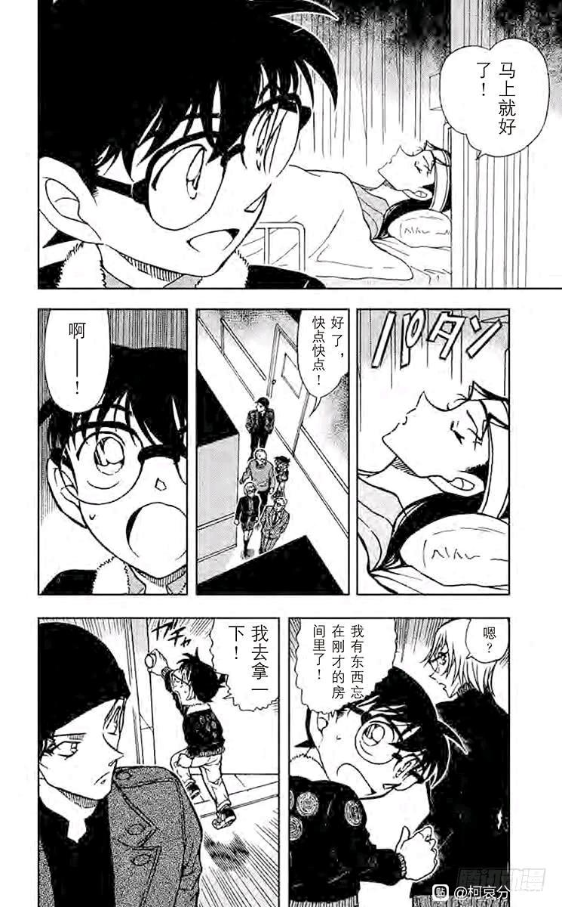
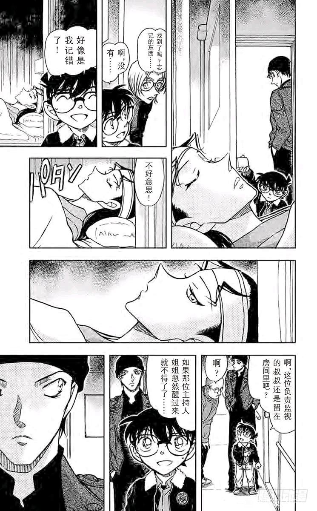
2024-05-22 22:14 | 史桩之玄枵:再到后来父子相称（笑）

然而，即使秀一和柯南对院长再多怀疑，毕竟没有证据，琴酒的处理非常得当，他合理地运用了院长的信息，完全没有暴露院长的黑方存在。
但柯南可以做到让小哀远离杯户中央医院，并且后文找到了依据：
【杯户中央医院】第二次出场时，英理住院，安室暴露公安身份，而第三次出场时，柯南做了一些小动作：小哀认为，“在自己的领域之外”发生了什么事情，这里非常奇怪，如果说柯南认为安室已经安全，至少会提前向小哀说明，让她不必担心（柯南认为瑛佑安全时，就直接向小哀说了）
柯南之所以不说，很可能是因为【即使安室安全，杯户中央医院也不安全】，该医院竟然能让安室轻易知道楠田陆道等三人的具体情况，而且事无巨细，可想而知院长（可能通过朗姆等黑方成员）给安室透露了多少信息，一旦小哀出现在杯户中央医院，哪怕只是医院附近，都可能直接导致暴露。
这里的“领域之外”，和秀一并没有什么关系，柯南在绯色篇已经直接向小哀说清楚了冲矢昴是好人，并没有什么“领域外”的必要。
之后的剧情肯定还会继续出现杯户中央医院的（楠田手枪还没填坑），青山每次都不让小哀进入医院，应该是别有用心的，杯户中央医院很可能触发一场红黑大战。
但柯南可以做到让小哀远离杯户中央医院，并且后文找到了依据：
【杯户中央医院】第二次出场时，英理住院，安室暴露公安身份，而第三次出场时，柯南做了一些小动作：小哀认为，“在自己的领域之外”发生了什么事情，这里非常奇怪，如果说柯南认为安室已经安全，至少会提前向小哀说明，让她不必担心（柯南认为瑛佑安全时，就直接向小哀说了）
柯南之所以不说，很可能是因为【即使安室安全，杯户中央医院也不安全】，该医院竟然能让安室轻易知道楠田陆道等三人的具体情况，而且事无巨细，可想而知院长（可能通过朗姆等黑方成员）给安室透露了多少信息，一旦小哀出现在杯户中央医院，哪怕只是医院附近，都可能直接导致暴露。
这里的“领域之外”，和秀一并没有什么关系，柯南在绯色篇已经直接向小哀说清楚了冲矢昴是好人，并没有什么“领域外”的必要。
之后的剧情肯定还会继续出现杯户中央医院的（楠田手枪还没填坑），青山每次都不让小哀进入医院，应该是别有用心的，杯户中央医院很可能触发一场红黑大战。
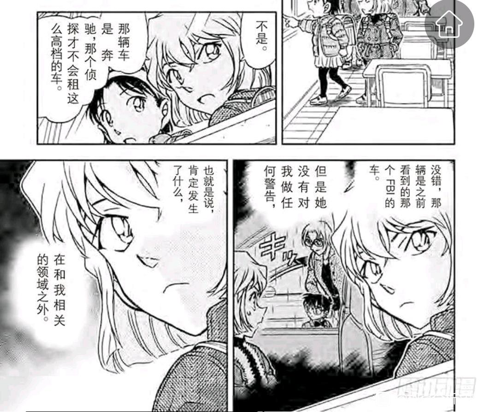
综上，我们得出了以下结论：
1、院长很可能是黑方。
2、詹姆斯与院长关系暧昧，但他并非黑方。
3、柯南秀一已经对院长和詹姆斯有各种各样的防备。
然而院长究竟何许人也？这里我们要从院长的联络人入手。
【以下就完全是猜测了，并无任何漫画证据支撑】
贝姐不知道院长存在，伏特加等人也不知道，但琴酒显然对院长一清二楚，此外朗姆能够混入医院给楠田手枪，也可以认为朗姆也知晓院长的存在。
那么院长就很难是BOSS直系，尽管院长的鼻子和乌丸莲耶有相似之处，那也有可能只是亲戚，院长是黑方最重要的白手套，他和詹姆斯的特殊关系让黑方拥有很大的便宜，甚至黑方反过来应该保护詹姆斯“日本负责人”的位置，从而拥有活动空间，这样看来院长应该为执行层，单独联络琴酒却未必有酒名。
如果进一步猜想，院长可能和常盘荣策有相似的属性，都是医药界人物，接受了酒厂的“帮助”，常盘荣策让酒厂帮他干掉竞争对手，院长则突然当上了院长（连詹姆斯都感到惊讶），这些人显然是为了替代雪莉叛逃后空缺的制药位，当然酒厂对这些人恐怕并不信任，小哀的父母就没有酒名且一直被监视，那么医院里突然出现的朗姆，也有可能就是监视院长的人之一。
1、院长很可能是黑方。
2、詹姆斯与院长关系暧昧，但他并非黑方。
3、柯南秀一已经对院长和詹姆斯有各种各样的防备。
然而院长究竟何许人也？这里我们要从院长的联络人入手。
【以下就完全是猜测了，并无任何漫画证据支撑】
贝姐不知道院长存在，伏特加等人也不知道，但琴酒显然对院长一清二楚，此外朗姆能够混入医院给楠田手枪，也可以认为朗姆也知晓院长的存在。
那么院长就很难是BOSS直系，尽管院长的鼻子和乌丸莲耶有相似之处，那也有可能只是亲戚，院长是黑方最重要的白手套，他和詹姆斯的特殊关系让黑方拥有很大的便宜，甚至黑方反过来应该保护詹姆斯“日本负责人”的位置，从而拥有活动空间，这样看来院长应该为执行层，单独联络琴酒却未必有酒名。
如果进一步猜想，院长可能和常盘荣策有相似的属性，都是医药界人物，接受了酒厂的“帮助”，常盘荣策让酒厂帮他干掉竞争对手，院长则突然当上了院长（连詹姆斯都感到惊讶），这些人显然是为了替代雪莉叛逃后空缺的制药位，当然酒厂对这些人恐怕并不信任，小哀的父母就没有酒名且一直被监视，那么医院里突然出现的朗姆，也有可能就是监视院长的人之一。
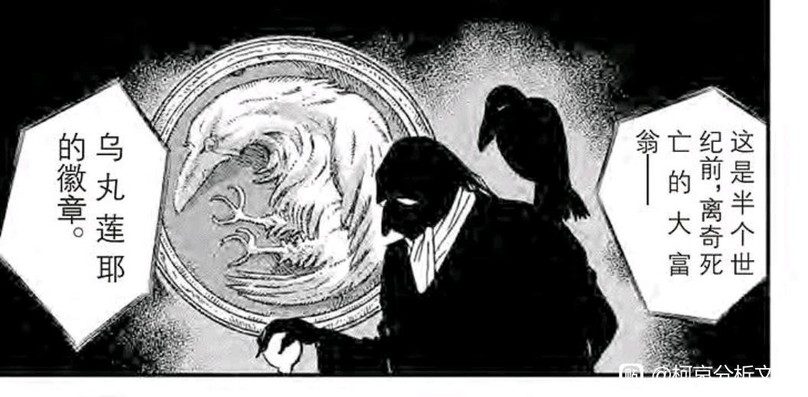
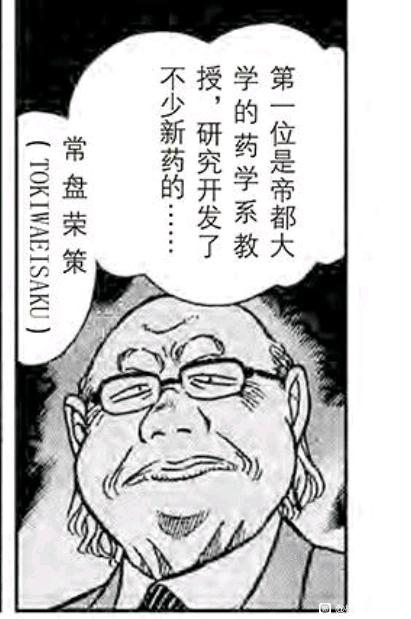
正文完，大家以为如何呢？
院长为黑不会导致水无安室暴露，这样比詹黑要合理得多。
院长为黑不会导致水无安室暴露，这样比詹黑要合理得多。
看完了，院长为黑这个观点很新。但朗姆曾经潜入过医院实在不能认同。目前来看正传里的朗姆出动就是波本篇后的事情，正传前也只有赤井暴露时的仓库老人。朗姆本人的易容水平感觉不高（至少没到贝姐的程度），而且他至少有乌丸集团发言人这样的明面身份，由他亲自作为警方卧底的概率很小。以及如果到朗姆这个层级谋划劫水无的事，他其实都没有必要在中途向boss汇报。另外朗姆如果真的早已出动，他的化名是什么？目前胡编乱造的胁田兼则已经是指向他的证据了，总不能还有另外的化名吧。感觉目前朗姆还没有狠到要暴露boss的地步，顶多是和boss之间互相提防，这时给楠田陆道枪只会暴露黑方在警察有卧底，而起不到更好的作用。
2024-05-19 22:17 | 🌐之徙:这里解释一下，我只是为了方便，称其为朗姆，把他当仓库老人也行，当时青山对朗姆的人设应该还没那么详细。2024-05-19 22:18 | 🌐之徙:朗姆未必要自己出动，他可以让库拉索/宾加代替自己行驶职能，总之给手枪就完事了。
以及，吐槽一点，朗姆这货虽然有时胆小如鼠，但用人水平还是不错的。剧场版一起算的话，朗姆手下三个大将是波本（神秘主义者，超强侦查员）库拉索（眼睛超能力，闯公安偷名单）宾加（易容天才，卧底太平洋浮标）他的手下走的也是精英路线，而指挥废物的时候就经常出错（狙击二人组）很难想象他会屈尊去利用一个连酒名都没有的楠田陆道（水平不够，意味着难以掌控）
2024-05-19 22:20 | 🌐之徙:楠田是琴酒派来的，朗姆对他的态度估计和琴酒对宾加态度不多，利用完该死就死吧。手枪的部分还是等更新，目前信息太少。
插个眼
想了想还是觉得怪，詹姆斯如果是第三方，他培养谁作党羽呢？朱蒂，卡迈尔都正义感比较足，如果他要抢药估计不会支持他。别的fbi描写不多，海猿岛篇还死了很多，詹姆斯也没有很心疼的样子。如果真的要决战，日本本土的公安应该是最强的，就凭詹姆斯能拉拢到的势力太弱小了。
2024-05-19 23:10 | 🌐之徙:那就很简单了，只要詹姆斯和黑方足够要好，他甚至可以收留黑方残余势力（就像二战美国人收留日本部队一样）2024-05-19 23:23 | 贴吧用户_GR9GSJy:回复 🌐之徙 :所以他如果是黑方隐藏的高层其实更合理。比如朗姆之上乌丸之下这样的高层（朗姆这个二把手不知道药物相关，说明可能有boss嫡系信息权限比他还高，只是不能负责犯罪那边）。
关于抢药的部分，我觉得就涉及到整部作品后期主线究竟是解决组织就解散呢，还是继续围绕A药技术展开攻防的问题了
如果是后者，那么不单单詹姆斯是“敌方”（从柯南的角度），所有阵营领袖级别的角色都可以视作敌方，且不说返老还童对所有权力者的诱惑有多大，单单制造A药的生化技术就足够各国投入资源去抢夺了。但如果如此，就意味着整部作品的第三次大规模设定升级，我不认为现在的青山还有这本事，他能好好把酒厂线写完就不错了...
如果是前者，单纯讨论詹姆斯是不是组织的人，那我倾向于认为不是。
如果是后者，那么不单单詹姆斯是“敌方”（从柯南的角度），所有阵营领袖级别的角色都可以视作敌方，且不说返老还童对所有权力者的诱惑有多大，单单制造A药的生化技术就足够各国投入资源去抢夺了。但如果如此，就意味着整部作品的第三次大规模设定升级，我不认为现在的青山还有这本事，他能好好把酒厂线写完就不错了...
如果是前者，单纯讨论詹姆斯是不是组织的人，那我倾向于认为不是。
很有趣的想法，詹姆斯或许有灰色立场，不是黑方但也不能算纯粹的红方
他是米锅佛波勒的有着别的不可告人的任务
他很有可能想抢夺酒厂的科研成果，要保护灰原的安全还真不能给詹姆斯知道更多了，一旦让詹姆斯得知灰原手里有酒厂的aptx藥物存在，那么他大概率会暗中谋划针对藥物和灰原的举动。
院长是酒厂的白收滔的这一猜想是可能的
院长被拉拢替酒厂做事
詹姆斯和可能是黑方的院长之间有着某种默契
他是米锅佛波勒的有着别的不可告人的任务
他很有可能想抢夺酒厂的科研成果，要保护灰原的安全还真不能给詹姆斯知道更多了，一旦让詹姆斯得知灰原手里有酒厂的aptx藥物存在，那么他大概率会暗中谋划针对藥物和灰原的举动。
院长是酒厂的白收滔的这一猜想是可能的
院长被拉拢替酒厂做事
詹姆斯和可能是黑方的院长之间有着某种默契
大冈老头跟公安不是一条线的吧，不然安室见大冈没必要瞒黑田
2024-05-19 23:36 | 🌐之徙:回复 剑锋寒光 :黑田也只是打工仔，公安系的BOSS应该就是大冈老头。2024-05-19 23:41 | 剑锋寒光:回复 🌐之徙 :如果大冈是现任首相那说得通，但是他是前首相，理论上他是平民，没有指挥公安的权力。而且如果大冈是公安老大，安室真没必要瞒黑田，总不能是怀疑躺了十年的黑田是卧底吧...2024-05-20 00:59 | 🌐之徙:回复 剑锋寒光 :这个我倒觉得正常，毕竟大冈老头调查柯南本身算是私活，不告诉黑田也挺好的。前首相肯定还是有很大影响力的，不能算平民。
詹姆斯还知道灰原就是雪莉，他掌握到的情报不少啊
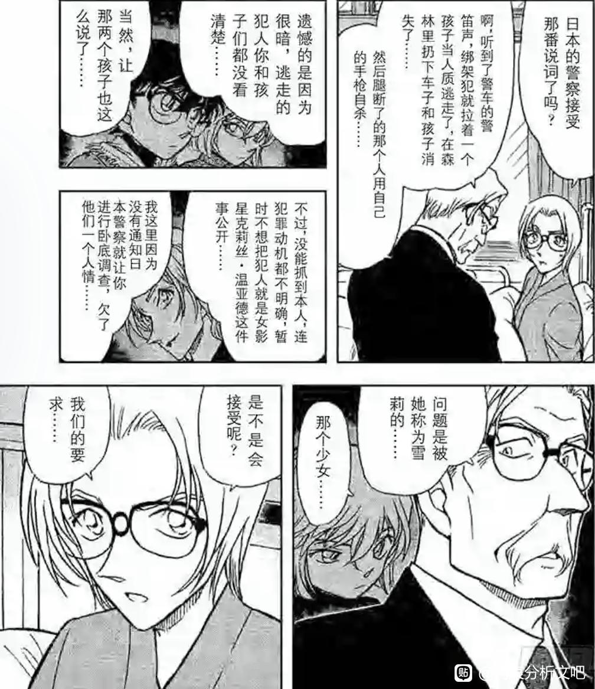
2024-05-22 01:22 | 🌐之徙:但他可能以为雪莉就是一个小女孩，目前并未把“秀一女朋友的科学家妹妹”和“雪莉”联系在一起。
詹姆斯喜欢峰不二子，峰不二子是一个亦正亦邪的灰色角色
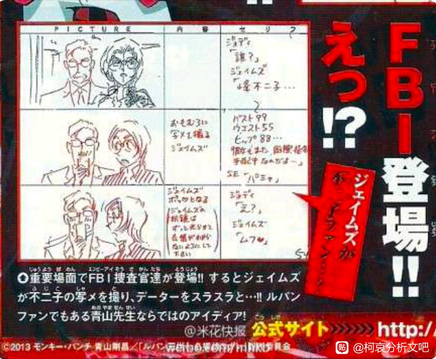
我来看看有木有更新